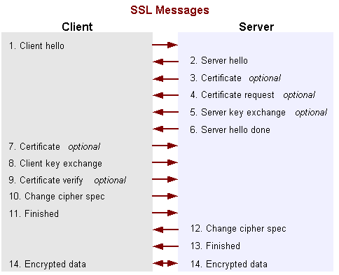
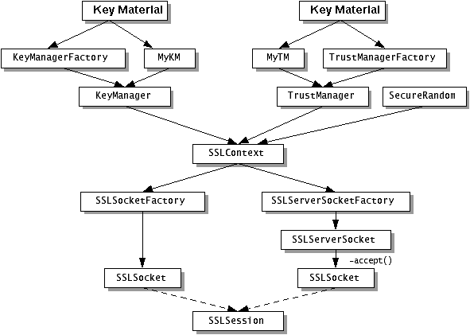

Data that travels across a network can easily be accessed by someone who is not the intended recipient. When the data includes private information, such as passwords and credit card numbers, steps must be taken to make the data unintelligible to unauthorized parties. It is also important to ensure the data has not been modified, either intentionally or unintentionally, during transport. The Secure Sockets Layer (SSL) and Transport Layer Security (TLS) protocols were designed to help protect the privacy and integrity of data while it is transferred across a network.The Java Secure Socket Extension (JSSE) enables secure Internet communications. It provides a framework and an implementation for a Java version of the SSL and TLS protocols and includes functionality for data encryption, server authentication, message integrity, and optional client authentication. Using JSSE, developers can provide for the secure passage of data between a client and a server running any application protocol, such as Hypertext Transfer Protocol (HTTP), Telnet, or FTP, over TCP/IP. (For an introduction to SSL, see Secure Sockets Layer (SSL) Protocol Overview.)
By abstracting the complex underlying security algorithms and "handshaking" mechanisms, JSSE minimizes the risk of creating subtle, but dangerous security vulnerabilities. Furthermore, it simplifies application development by serving as a building block which developers can integrate directly into their applications.
JSSE was previously an optional package (standard extension) to the JavaTM 2 SDK, Standard Edition (J2SDK) versions 1.2 and 1.3. JSSE has now been integrated into the J2SDK, v 1.4.
JSSE provides both an application programming interface (API) framework and an implementation of that API. The JSSE API supplements the "core" cryptographic services defined in the Java 2 SDK, v 1.4
java.securityandjava.netpackages by providing extended networking socket classes, trust managers, key managers, SSLContexts, and a socket factory framework for encapsulating socket creation behavior. (It also provides a limited public key certificate API that is compatible with Java Development Kit (JDK) 1.1-based platforms. However, please note that this limitedjavax.security.certcertificate API is provided only for backward compatibility with JSSE 1.0.x and should not be used. Instead, use the standardjava.security.certcertificate API.)The JSSE API is capable of supporting SSL versions 2.0 and 3.0 and Transport Layer Security (TLS) 1.0. These security protocols encapsulate a normal bidirectional stream socket and the JSSE API adds transparent support for authentication, encryption, and integrity protection. The JSSE implementation in the J2SDK, v 1.4 implements SSL 3.0 and TLS 1.0. It does not implement SSL 2.0.
As mentioned above, JSSE is a security component of the Java 2 platform, and is based on the same design principles found elsewhere in the Java Cryptography Architecture (JCA) framework. This framework for cryptography-related security components allows them to have implementation independence and, whenever possible, algorithm independence. JSSE uses the same "provider" architecture defined in the JCA.
Other security components in the Java 2 platform include the Java Cryptography Extension (JCE), the Java Authentication and Authorization Service (JAAS), and the Java Security Tools. JSSE encompasses many of the same concepts and algorithms as those in JCE but automatically applies them underneath a simple stream socket API.
The JSSE APIs were designed to allow other SSL/TLS protocol and Public Key Infrastructure (PKI) implementations to be plugged in seamlessly. Developers can also provide alternate logic for determining if remote hosts should be trusted or what authentication key material should be sent to a remote host.
Note: While the JSSE APIs allow the replacement of the underlying implementations (also known as "pluggability"), due to U.S. export restrictions this release does not permit you to replace the SSL/TLS algorithms. TheTrustManagerFactoryandKeyManagerFactoryare still fully pluggable.
Features and Benefits
JSSE includes the following important features:
- Implemented in 100% Pure Java
- Can be exported to most countries
- Provides API support for SSL versions 2.0 and 3.0, and implementation of SSL version 3.0
- Provides API support and an implementation for TLS version 1.0
- Includes classes that can be instantiated to create secure channels (
SSLSocketandSSLServerSocket)
- Provides support for cipher suite negotiation, which is part of the SSL handshaking used to initiate or verify secure communications
- Provides support for client and server authentication, which is part of the normal SSL handshaking
- Provides support for Hypertext Transfer Protocol (HTTP) encapsulated in the SSL protocol (HTTPS), which allows access to data such as web pages using HTTPS
- Provides server session management APIs to manage memory-resident SSL sessions
- Includes code licensed from RSA Data Security Inc. such as RSA and RC4
- Provides support for several cryptographic algorithms commonly used in cipher suites, including those listed in the following table:
Cryptographic Functionality Available With JSSE
Cryptographic Algorithm *
Cryptographic Process
Key Lengths (Bits)
RSA
Authentication and key exchange
2048 (authentication)
2048 (key exchange)
512 (key exchange)RC4
Bulk encryption
128
128 (40 effective)DES
Bulk encryption
64 (56 effective)
64 (40 effective)Triple DES
Bulk encryption
192 (112 effective)
Diffie-Hellman
Key agreement
1024
512DSA
Authentication
1024
* Note: The cryptographic algorithms shipped in the SunJSSE provider are not registered with the Java Cryptography Architecture (JCA) provider framework, and are not available for use by other applications.
** Note: The SunJSSE implementation uses the JavaTM Cryptography Extension (JCE) AES cipher for AES-based ciphersuites.
JSSE Standard API
The JSSE standard API, available in the
javax.net,javax.net.sslandjavax.security.certpackages, covers:
- Secure (SSL) sockets and server sockets.
- Factories for creating sockets, server sockets, SSL sockets, and SSL server sockets. Using socket factories you can encapsulate socket creation and configuration behavior.
- A class representing a secure socket context that acts as a factory for secure socket factories.
- Key and trust manager interfaces (including X.509-specific key and trust managers), and factories for creating them.
- A class for secure HTTP URL connections.
- A public key certificate API compatible with JDK 1.1-based platforms.
SunJSSEProviderThe J2SDK, v 1.4 release comes with a JSSE provider named "
SunJSSE", which comes pre-installed and pre-registered with the JCA. This provider supplies the following cryptographic services:The following table lists the cipher suites that
- RSA support for the signature-related JCA features of the Java 2 platform.
- An implementation of the SSL 3.0 and TLS 1.0 security protocols.
- An implementation of the most common SSL and TLS cipher suites which encompass a combination of authentication, key agreement, encryption and integrity protection.
- An implementation of an X.509-based key manager which chooses appropriate authentication keys from a standard JCA KeyStore.
- An implementation of an X.509-based trust manager which implements rules for certificate chain path validation.
- A read-only implementation of PKCS12 as JCA keystore type "pkcs12".
SunJSSEsupports and those that are enabled by default.
Supported Cipher Suites in Default Preference Order Name Enabled by Default New in
J2SE 1.4.2SSL_RSA_WITH_RC4_128_MD5 X SSL_RSA_WITH_RC4_128_SHA X TLS_RSA_WITH_AES_128_CBC_SHA X X TLS_DHE_RSA_WITH_AES_128_CBC_SHA X X TLS_DHE_DSS_WITH_AES_128_CBC_SHA X X SSL_RSA_WITH_3DES_EDE_CBC_SHA X SSL_DHE_RSA_WITH_3DES_EDE_CBC_SHA X X SSL_DHE_DSS_WITH_3DES_EDE_CBC_SHA X SSL_RSA_WITH_DES_CBC_SHA X SSL_DHE_RSA_WITH_DES_CBC_SHA X X SSL_DHE_DSS_WITH_DES_CBC_SHA X SSL_RSA_EXPORT_WITH_RC4_40_MD5 X SSL_RSA_EXPORT_WITH_DES40_CBC_SHA X X SSL_DHE_RSA_EXPORT_WITH_DES40_CBC_SHA X X SSL_DHE_DSS_EXPORT_WITH_DES40_CBC_SHA X TLS_RSA_WITH_AES_256_CBC_SHA * X TLS_DHE_RSA_WITH_AES_256_CBC_SHA * X TLS_DHE_DSS_WITH_AES_256_CBC_SHA * X SSL_RSA_WITH_NULL_MD5 SSL_RSA_WITH_NULL_SHA SSL_DH_anon_WITH_RC4_128_MD5 TLS_DH_anon_WITH_AES_128_CBC_SHA X TLS_DH_anon_WITH_AES_256_CBC_SHA * X SSL_DH_anon_WITH_3DES_EDE_CBC_SHA SSL_DH_anon_WITH_DES_CBC_SHA SSL_DH_anon_EXPORT_WITH_RC4_40_MD5 SSL_DH_anon_EXPORT_WITH_DES40_CBC_SHA * Requires installation of the JCE Unlimited Strength Jurisdiction Policy Files. See http://java.sun.com/j2se/1.4.2/download.html
What's New
This section highlights the differences between the JSSE in releases 1.4.2 and 1.4 of the Java 2 Platform and earlier releases.What's New in JSSE in the J2SDK, v 1.4.2
The following changes were introduced in the JSSE in version 1.4.2 of the Java 2 platform:
- The SunJSSE implementation now supports a number of additional ciphersuites. They include ciphersuites using AES as a symmetric cipher and ephemeral Diffie-Hellman with RSA authentication (DHE_RSA). For more information, see the table of "Supported Cipher Suites" in the section
SunJSSEProvider.
- In addition to the simple X.509 based trustmanager previously available in the SunJSSE provider, it now supports a second, PKIX-compliant trust manager. It is implemented using the default CertPath PKIX implementation. For more information, see the section
TrustManagerFactoryClass.What's New in JSSE in the J2SDK, v 1.4
Here are the differences between JSSE 1.0.2 and the JSSE in the J2SDK, v 1.4:
- JSSE Is Now in J2SDK
javax.security.certShould Not Be Used
- SunJSSE Provider Can Use JCE Providers for Encryption
- Classes Formerly in
com.sun.net.sslAre Now in javax.net.ssl
- New Methods and Interface
- Changed Classes and Methods
- Documentation Improvements
JSSE Is Now in J2SDK
JSSE was previously an optional package (extension) to the JavaTM 2 SDK, Standard Edition (J2SDK), versions 1.2 and 1.3. JSSE has now been integrated into the J2SDK, v 1.4. The SunJSSE provider is also included and is pre-registered in the
java.securitysecurity properties file included with the J2SDK, v 1.4.
javax.security.certShould Not Be UsedJSSE was developed before the
java.security.certpackage was widely available, so a supplemental certificate package was introduced in earlier versions of JSSE calledjavax.security.cert. JSSE is now bundled into the J2SDK itself and takes advantage of the more complete certificate API available in thejava.security.certpackage. All new applications should usejava.security.cert. Thejavax.security.certpackage exists only for backward compatibility with previous JSSE releases, and should no longer be used.SunJSSE Provider Can Use JCE Providers for Encryption
The SunJSSE provider can now make use of JCE providers for encryption algorithms. Previously, SunJSSE always made use of internal implementations for encryption algorithms. Now implementations from providers with a higher preference order than SunJSSE are used if available. See Customizing the Encryption Algorithm Providers for more information.
Classes Formerly in com.sun.net.ssl Are Now in javax.net.ssl
All of the classes and interfaces formerly (in JSSE 1.0.x) in the
com.sun.net.sslpackage have been promoted to thejavax.net.sslpackage. The oldcom.sun.net.sslclasses and interfaces still exist and are unchanged, but are included in the SunJSSE provider only for backward compatibility. What is provided is actually "wrappers" that reference the newjavax.net.sslclasses/interfaces.The implementation now uses
javax.net.ssl.SSLPermissionsrather thancom.sun.net.ssl.SSLPermission, so any policy files that used to mentioncom.sun.net.ssl.SSLPermissionshould now usejavax.net.ssl.SSLPermissionsinstead.New Methods and Interfaces
New methodssetWantClientAuthandgetWantClientAuthwere added toSSLSocketandSSLServerSocket(injavax.net.ssl) to enable optional client authentication.The method
SSLContext.getInstance(protocol)returns socket factories which support at least the specified protocol. New methodssetEnabledProtocolsandgetEnabledProtocolswere added toSSLSocketandSSLServerSocketto further refine which protocols are enabled for use on this connection. Another new methodgetSupportedProtocolswas added toSSLSocketandSSLServerSocket;getSupportedProtocolscan be used to obtain the protocol versions that can be enabled for use on an SSL connection. The new methodgetProtocolwas added toSSLSessionfor retrieving the standard name of the protocol used in the session.
SocketFactoryandServerSocketFactoryhave new methodscreateSocketandcreateServerSocket, respectively, for creating unconnected sockets.New methods
getServerSessionContextandgetClientSessionContextwere added toSSLContext. They allow the developer to obtain the set of SSL client or server sessions available for reuse during handshaking.New methods
setSessionTimeoutandgetSessionTimeoutwere added toSSLSessionContext. They allow the developer to control when sessions timeout and become invalid. New methodssetSessionCacheSizeandgetSessionCacheSizewere also added to control how many sessions should be cached for reuse by future connections.New methods were added to
HttpsURLConnection,SSLSession, andHandshakeCompletedEvent(all injavax.net.ssl) that allow you to get generic Java 2java.security.cert.Certificatecertificates in addition to thejavax.security.cert.X509Certificatecertificates returned by previously-existing methods. The new methods areSSLSession.getPeerCertificates HandshakeCompletedEvent.getPeerCertificates HttpsURLConnection.getServerCertificatesA
getLocalCertificatesmethod was added toSSLSession,HandshakeCompletedEvent, andHttpsURLConnection. This method returns the certificate(s) that were sent to the peer during handshaking. This provides a way to determine what certificate chain was actually used to authenticate the local side of a given SSL session.A new interface
ManagerFactoryParameterswas added as a base interface that providers can extend if they needKeyManagerFactoryand/orTrustManagerFactoryinitialization parameters other than the ones that can be passed to the KeyStore-basedinitmethods of those classes. TheKeyManagerFactoryandTrustManagerFactoryclasses each have a newinitmethod that takes aManagerFactoryParametersargument. Users of a particular provider are expected to pass an implementation of the appropriateManagerFactoryParametersas defined by the provider.Changed Classes and Methods
When the
com.sunAPIs were prepared for inclusion in thejavaxnamespace, some API limitations were corrected in thejavaxversion. The oldcom.sun.*APIs found in the previous JSSE optional packages are still the same and have not changed. The changes described in the paragraphs below only apply to the newjavax.*classes of the same name.The
HttpsURLConnectionconstructor has been changed to be protected. This was done for consistency with other similar classes such asURLConnection,JarURLConnection, andHttpURLConnection, all in thejava.netpackage. Another change to theHttpsURLConnectionclass is that the method that returnedjavax.security.certcertificates was removed.Hostname verification has been redone to be more generic. The negotiated
SSLSessionis now passed to the verifier'sverifymethod instead of the hostname contained in the received certificates. TheSSLSessioncan then be queried for the negotiated ciphersuite, the exchanged certificates, and so on.The
X509TrustManager isClientTrustedandisServerTrustedmethods were renamedcheckClientTrustedandcheckServerTrusted, respectively. If the certificate chain is not trusted by thisTrustManager, thecheckClientTrustedandcheckServerTrustedmethods throw an exception rather than return aboolean(like the former methods did). This allows implementations to ascertain the underlying cause for failure of the trust decision. The checks done bycheckClientTrustedandcheckServerTrustedinclude verifying that the certificate is used for an operation that complies with the certificate's key usage extension. To properly perform this check, it is necessary to pass the authentication type to these methods, and so aString authTypeargument has been added.One parameter has been added and one changed for the
X509KeyManager chooseClientAliasandchooseServerAliasmethods. ASocket socketparameter was added to both methods for specifying the socket to be used for the connection. Thekeytypeparameter for thechooseClientAliasmethod was changed from a single String to an array of Strings specifying the key algorithm type name(s), ordered with the most-preferred type first. For example, thechooseClientAliasmethod signature used to beand now it ischooseClientAlias(String keyType, Principal[] issuers)The parameters help decide which certificate(s) to use when connecting to a remote host.chooseClientAlias(String[] keyType, Principal[] issuers, Socket socket)The default key manager factory algorithm name has been changed from
sun.ssl.keymanager.typetossl.KeyManagerFactory.algorithm. Similarly, the default trust manager factory algorithm name has been changed fromsun.ssl.trustmanager.typetossl.TrustManagerFactory.algorithm.Documentation Improvements
This JSSE Reference Guide was updated and expanded.
There were a number of minor clarifications made to the JSSE javadocs, primarily when discussing illegal arguments and implied behavior.
Related Documentation
Java Secure Socket Extension Documentation
- The JSSE home page, with links to JavaOneSM conference slides, the JSSE FAQ, legal issues, etc.:
http://java.sun.com/products/jsse/
- Archive of API-related questions and answers posted to Sun's Java Security team through java-security@sun.com:
http://archives.java.sun.com/archives/java-security.htmlNote: The above mailing list is not a subscription list or a support mechanism. It is simply a one-way channel that you can use to send comments to the Java 2 Standard Edition security team.
- JSSE API documentation:
Java 2 Platform Security Documentation
- Java 2 security homepage:
http://java.sun.com/security/
- The JavaTM Certification Path API Programmer's Guide:
http://java.sun.com/j2se/1.4.2/docs/guide/security/certpath/CertPathProgGuide.html
- Links to more Java 2 platform security documents:
http://java.sun.com/j2se/1.4.2/docs/guide/security/
- Tutorial for Java 2 platform security:
http://java.sun.com/docs/books/tutorial/security1.2/
- Book on Java 2 platform security:
Inside Java 2 Platform Security: Architecture, API Design, and Implementation by Li Gong. Addison Wesley Longman, Inc., 1999. ISBN: 0201310007.Export Issues Related to Cryptography
For information on U.S. encryption policies, refer to these Web sites:
- U.S. Department of Commerce:
http://www.doc.gov/
- Export Policy Resource Page:
http://www.crypto.com/
- Computer Systems Public Policy:
http://www.cspp.org/
- Federal Information Processing Standards Publications (FIPS PUBS) homepage, which has links to the Data Encryption Standard (DES):
http://www.itl.nist.gov/fipspubs/
- Revised U.S. Encryption Export Control Regulations:
http://www.epic.org/crypto/export_controls/regs_1_00.htmlCryptography Documentation
Online resources:
- Dr. Rivest's Cryptography and Security page:
http://theory.lcs.mit.edu/~rivest/crypto-security.htmlBooks:
- Applied Cryptography, Second Edition by Bruce Schneier. John Wiley and Sons, Inc., 1996.
- Cryptography Theory and Practice by Doug Stinson. CRC Press, Inc., 1995.
- Cryptography & Network Security: Principles & Practice by William Stallings. Prentice Hall, 1998.
Secure Sockets Layer Documentation
Online resources:
- Documentation from Netscape about SSL:
http://developer.netscape.com/docs/manuals/security.html#SSL
- Introduction to SSL from Sun™ ONE Software (formerly known as iPlanet):
http://www.iplanet.com/developer/docs/articles/security/
ssl.html
- The SSL Protocol version 3.0 Internet Draft:
http://home.netscape.com/eng/ssl3/ssl-toc.html
- The TLS Protocol version 1.0 Internet Draft:
http://www.ietf.org/rfc/rfc2246.txt
- "HTTP Over TLS" Information RFC:
http://www.ietf.org/rfc/rfc2818.txtBooks:
- SSL and TLS: Designing and Building Secure Systems by Eric Rescorla. Addison Wesley Professional, 2000.
- SSL and TLS Essentials: Securing the Web by Stephen Thomas. John Wiley and Sons, Inc., 2000.
- Java 2 Network Security, Second Edition, by Marco Pistoia, Duane F Reller, Deepak Gupta, Milind Nagnur, and Ashok K Ramani. Prentice Hall, 1999. Copyright 1999 International Business Machines.
There are several terms relating to cryptography that are used within this document. This section defines some of these terms.
Authentication
Authentication is the process of confirming the identity of a party with whom one is communicating.Cipher Suite
A cipher suite is a combination of cryptographic parameters that define the security algorithms and key sizes used for authentication, key agreement, encryption, and integrity protection.Certificate
A certificate is a digitally signed statement vouching for the identity and public key of an entity (person, company, etc.). Certificates can either be self-signed or issued by a Certification Authority (CA). Certification Authorities are entities that are trusted to issue valid certificates for other entities. Well-known CAs include VeriSign, Entrust, and GTE CyberTrust. X509 is a common certificate format, and they can be managed by the JDK's keytool.Cryptographic Hash Function
A cryptographic hash function is similar to a checksum. Data is processed with an algorithm that produces a relatively small string of bits called a hash. A cryptographic hash function has three primary characteristics: it is a one-way function, meaning that it is not possible to produce the original data from the hash; a small change in the original data produces a large change in the resulting hash; and it does not require a cryptographic key.Cryptographic Service Provider
In the JCA, implementations for various cryptographic algorithms are provided by cryptographic service providers, or "providers" for short. Providers are essentially packages that implement one or more engine classes for specific algorithms. An engine class defines a cryptographic service in an abstract fashion without a concrete implementation.Digital Signature
A digital signature is the digital equivalent of a handwritten signature. It is used to ensure that data transmitted over a network was sent by whoever claims to have sent it and that the data has not been modified in transit. For example, an RSA-based digital signature is calculated by first computing a cryptographic hash of the data and then encrypting the hash with the sender's private key.Encryption and Decryption
Encryption is the process of using a complex algorithm to convert an original message, or cleartext, to an encoded message, called ciphertext, that is unintelligible unless it is decrypted. Decryption is the inverse process of producing cleartext from ciphertext. The algorithms used to encrypt and decrypt data typically come in two categories: secret key (symmetric) cryptography and public key (asymmetric) cryptography.Handshake Protocol
The negotiation phase during which the two socket peers agree to use a new or existing session. The handshake protocol is a series of messages exchanged over the record protocol. At the end of the handshake new connection-specific encryption and integrity protection keys are generated based on the key agreement secrets in the session.Key Agreement
Key agreement is a protocol by which 2 or more parties can establish the same cryptographic keys, without having to exchange any secret information in the clear. Examples include RSA and Diffie-Hellman.Key Managers and Trust Managers
Key managers (see
KeyManagerFactory) and trust managers (seeTrustManagerFactory) use keystores for their key material. A key manager manages a keystore and supplies public keys to others as needed, e.g., for use in authenticating the user to others. A trust manager makes decisions about who to trust based on information in the truststore it manages.Keystores and Truststores
A keystore is a database of key material. Key material is used for a variety of purposes, including authentication and data integrity. There are various types of keystores available, including "PKCS12" and Sun's "JKS."
Generally speaking, keystore information can be grouped into two different categories: key entries and trusted certificate entries. A key entry consists of an entity's identity and its private key, and can be used for a variety of cryptographic purposes. In contrast, a trusted certificate entry only contains a public key in addition to the entity's identity. Thus, a trusted certificate entry can not be used where a private key is required, such as in a
javax.net.ssl.KeyManager. In the J2SDK implementation of "JKS", a keystore may contain both key entries and trusted certificate entries.A truststore is a keystore which is used when making decisions about what to trust. If you receive some data from an entity that you already trust, and if you can verify that the entity is the one it claims to be, then you can assume that the data really came from that entity.
An entry should only be added to a truststore if the user makes a decision to trust that entity. By either generating a keypair or by importing a certificate, the user has given trust to that entry, and thus any entry in the keystore is considered a trusted entry.
It may be useful to have two different keystore files: one containing just your key entries, and the other containing your trusted certificate entries, including Certification Authority (CA) certificates. The former contains private information, while the latter does not. Using two different files instead of a single keystore file provides for a cleaner separation of the logical distinction between your own certificates (and corresponding private keys) and others' certificates. You could provide more protection for your private keys if you store them in a keystore with restricted access, while providing the trusted certificates in a more publicly accessible keystore if needed.
Message Authentication Code
A Message Authentication Code (MAC) provides a way to check the integrity of information transmitted over or stored in an unreliable medium, based on a secret key. Typically, MACs are used between two parties that share a secret key in order to validate information transmitted between these parties.A MAC mechanism that is based on cryptographic hash functions is referred to as HMAC. HMAC can be used with any cryptographic hash function, such as Message Digest 5 (MD5) and Secure Hash Algorithm (SHA), in combination with a secret shared key. HMAC is specified in RFC 2104.
Public Key Cryptography
Public key cryptography uses an encryption algorithm in which two keys are produced. One key is made public while the other is kept private. The public key and the private key are cryptographic inverses; what one key encrypts only the other key can decrypt. Public key cryptography is also called asymmetric cryptography.Record Protocol
The record protocol packages all data whether application-level or as part of the handshake process into discrete records of data much like a TCP stream socket converts an application byte stream into network packets. The individual records are then protected by the current encryption and integrity protection keys.Secret Key Cryptography
Secret key cryptography uses an encryption algorithm in which the same key is used both to encrypt and decrypt the data. Secret key cryptography is also called symmetric cryptography.Session
A session is a named collection of state information including authenticated peer identity, cipher suite, and key agreement secrets which are negotiated through a secure socket handshake and which can be shared among multiple secure socket instances.Trust Managers
See Key Managers and Trust Managers.Truststore
See Keystores and Truststores.
Secure Sockets Layer (SSL) is the most widely used protocol for implementing cryptography on the Web. SSL uses a combination of cryptographic processes to provide secure communication over a network. This section provides an introduction to SSL and the cryptographic processes it uses.
SSL provides a secure enhancement to the standard TCP/IP sockets protocol used for Internet communications. As shown in the "TCP/IP Protocol Stack With SSL" figure below, the secure sockets layer is added between the transport layer and the application layer in the standard TCP/IP protocol stack. The application most commonly used with SSL is Hypertext Transfer Protocol (HTTP), the protocol for Internet Web pages. Other applications, such as Net News Transfer Protocol (NNTP), Telnet, Lightweight Directory Access Protocol (LDAP), Interactive Message Access Protocol (IMAP), and File Transfer Protocol (FTP), can be used with SSL as well.
Note: There is currently no standard for secure FTP.
TCP/IP Protocol Stack With SSL
TCP/IP Layer
Protocol
Application Layer
HTTP, NNTP, Telnet, FTP, etc.
Secure Sockets Layer
SSL
Transport Layer
TCP
Internet Layer
IP
SSL was developed by Netscape in 1994, and with input from the Internet community, has evolved to become a standard. It is now under the control of the international standards organization, the Internet Engineering Task Force (IETF). The IETF has renamed SSL to Transport Layer Security (TLS), and released the first specification, version 1.0, in January 1999. TLS 1.0 is a modest upgrade to the most recent version of SSL, version 3.0. The differences between SSL 3.0 and TLS 1.0 are minor.
Why Use SSL?
Transferring sensitive information over a network can be risky due to the following three issues:
- You cannot always be sure that the entity with whom you are communicating is really who you think it is.
- Network data can be intercepted, so it is possible that it can be read by an unauthorized third party, sometimes known as an attacker.
- If an attacker can intercept the data, the attacker may be able to modify the data before sending it on to the receiver.
SSL addresses each of these issues. It addresses the first issue by optionally allowing each of two communicating parties to ensure the identity of the other party in a process called authentication. Once the parties are authenticated, SSL provides an encrypted connection between the two parties for secure message transmission. Encrypting the communication between the two parties provides privacy and therefore addresses the second issue. The encryption algorithms used with SSL include a secure hash function, which is similar to a checksum. This ensures that data is not modified in transit. The secure hash function addresses the third issue of data integrity.
Note, both authentication and encryption are optional, and depend on the the negotiated cipher suites between the two entities.
The most obvious example of when you would use SSL is in an e-commerce transaction. In an e-commerce transaction, it would be foolish to assume that you can guarantee the identity of the server with whom you are communicating. It would be easy enough for someone to create a phony Web site promising great services if only you enter your credit card number. SSL allows you, the client, to authenticate the identity of the server. It also allows the server to authenticate the identity of the client, although in Internet transactions, this is seldom done.
Once the client and the server are comfortable with each other's identity, SSL provides privacy and data integrity through the encryption algorithms it uses. This allows sensitive information, such as credit card numbers, to be transmitted securely over the Internet.
While SSL provides authentication, privacy, and data integrity, it does not provide non-repudiation services. Non-repudiation means that an entity that sends a message cannot later deny that they sent it. When the digital equivalent of a signature is associated with a message, the communication can later be proved. SSL alone does not provide non-repudiation.
How SSL Works
One of the reasons SSL is effective is that it uses several different cryptographic processes. SSL uses public key cryptography to provide authentication, and secret key cryptography and digital signatures to provide for privacy and data integrity. Before you can understand SSL, it is helpful to understand these cryptographic processes.Cryptographic Processes
The primary purpose of cryptography is to make it difficult for an unauthorized third party to access and understand private communication between two parties. It is not always possible to restrict all unauthorized access to data, but private data can be made unintelligible to unauthorized parties through the process of encryption. Encryption uses complex algorithms to convert the original message, or cleartext, to an encoded message, called ciphertext. The algorithms used to encrypt and decrypt data that is transferred over a network typically come in two categories: secret key cryptography and public key cryptography. These forms of cryptography are explained in the following subsections.Both secret key cryptography and public key cryptography depend on the use of an agreed-upon cryptographic key or pair of keys. A key is a string of bits that is used by the cryptographic algorithm or algorithms during the process of encrypting and decrypting the data. A cryptographic key is like a key for a lock: only with the right key can you open the lock.
Safely transmitting a key between two communicating parties is not a trivial matter. A public key certificate allows a party to safely transmit its public key, while ensuring the receiver of the authenticity of the public key. Public key certificates are described in a later section.
In the descriptions of the cryptographic processes that follow, we use the conventions used by the security community: we label the two communicating parties with the names Alice and Bob. We call the unauthorized third party, also known as the attacker, Charlie.
Secret Key Cryptography
With secret key cryptography, both communicating parties, Alice and Bob, use the same key to encrypt and decrypt the messages. Before any encrypted data can be sent over the network, both Alice and Bob must have the key and must agree on the cryptographic algorithm that they will use for encryption and decryption.
One of the major problems with secret key cryptography is the logistical issue of how to get the key from one party to the other without allowing access to an attacker. If Alice and Bob are securing their data with secret key cryptography, and if Charlie gains access to their key, Charlie can understand any secret messages he intercepts between Alice and Bob. Not only can Charlie decrypt Alice's and Bob's messages, but he can also pretend that he is Alice and send encrypted data to Bob. Bob will not know that the message came from Charlie, not Alice.
Once the problem of secret key distribution is solved, secret key cryptography can be a valuable tool. The algorithms provide excellent security and encrypt data relatively quickly. The majority of the sensitive data sent in an SSL session is sent using secret key cryptography.
Secret key cryptography is also called symmetric cryptography because the same key is used to both encrypt and decrypt the data. Well-known secret key cryptographic algorithms include the Data Encryption Standard (DES), triple-strength DES (3DES), Rivest Cipher 2 (RC2), and Rivest Cipher 4 (RC4).
Public Key Cryptography
Public key cryptography solves the logistical problem of key distribution by using both a public key and a private key. The public key can be sent openly through the network while the private key is kept private by one of the communicating parties. The public and the private keys are cryptographic inverses of each other; what one key encrypts, the other key will decrypt.
Let's assume that Bob wants to send a secret message to Alice using public key cryptography. Alice has both a public key and a private key, so she keeps her private key in a safe place and sends her public key to Bob. Bob encrypts the secret message to Alice using Alice's public key. Alice can later decrypt the message with her private key.
If Alice encrypts a message using her private key and sends the encrypted message to Bob, Bob can be sure that the data he receives comes from Alice; if Bob can decrypt the data with Alice's public key, the message must have been encrypted by Alice with her private key, and only Alice has Alice's private key. The problem is that anybody else can read the message as well because Alice's public key is public. While this scenario does not allow for secure data communication, it does provide the basis for digital signatures. A digital signature is one of the components of a public key certificate, and is used in SSL to authenticate a client or a server. Public key certificates and digital signatures are described in later sections.
Public key cryptography is also called asymmetric cryptography because different keys are used to encrypt and decrypt the data. A well known public key cryptographic algorithm often used with SSL is the Rivest Shamir Adleman (RSA) algorithm. Another public key algorithm used with SSL that is designed specifically for secret key exchange is the Diffie-Hellman (DH) algorithm. Public key cryptography requires extensive computations, making it very slow. It is therefore typically used only for encrypting small pieces of data, such as secret keys, rather than for the bulk of encrypted data communications.
A Comparison Between Secret Key and Public Key Cryptography
Both secret key cryptography and public key cryptography have strengths and weaknesses. With secret key cryptography, data can be encrypted and decrypted quickly, but since both communicating parties must share the same secret key information, the logistics of exchanging the key can be a problem. With public key cryptography, key exchange is not a problem since the public key does not need to be kept secret, but the algorithms used to encrypt and decrypt data require extensive computations, and are therefore very slow.
Public Key Certificates
A public key certificate provides a safe way for an entity to pass on its public key to be used in asymmetric cryptography. The public key certificate avoids the following situation: if Charlie creates his own public key and private key, he can claim that he is Alice and send his public key to Bob. Bob will be able to communicate with Charlie, but Bob will think that he is sending his data to Alice.
A public key certificate can be thought of as the digital equivalent of a passport. It is issued by a trusted organization and provides identification for the bearer. A trusted organization that issues public key certificates is known as a certificate authority (CA). The CA can be likened to a notary public. To obtain a certificate from a CA, one must provide proof of identity. Once the CA is confident that the applicant represents the organization it says it represents, the CA signs the certificate attesting to the validity of the information contained within the certificate.
A public key certificate contains several fields, including:
- Issuer - The issuer is the CA that issued the certificate. If a user trusts the CA that issues a certificate, and if the certificate is valid, the user can trust the certificate.
- Period of validity - A certificate has an expiration date, and this date is one piece of information that should be checked when verifying the validity of a certificate.
- Subject - The subject field includes information about the entity that the certificate represents.
- Subject's public key - The primary piece of information that the certificate provides is the subject's public key. All the other fields are provided to ensure the validity of this key.
- Signature - The certificate is digitally signed by the CA that issued the certificate. The signature is created using the CA's private key and ensures the validity of the certificate. Because only the certificate is signed, not the data sent in the SSL transaction, SSL does not provide for non-repudiation.
If Bob only accepts Alice's public key as valid when she sends it in a public key certificate, Bob will not be fooled into sending secret information to Charlie when Charlie masquerades as Alice.
Multiple certificates may be linked in a certificate chain. When a certificate chain is used, the first certificate is always that of the sender. The next is the certificate of the entity that issued the sender's certificate. If there are more certificates in the chain, each is that of the authority that issued the previous certificate. The final certificate in the chain is the certificate for a root CA. A root CA is a public certificate authority that is widely trusted. Information for several root CAs is typically stored in the client's Internet browser. This information includes the CA's public key. Well-known CAs include VeriSign, Entrust, and GTE CyberTrust.
Cryptographic Hash Functions
When sending encrypted data, SSL typically uses a cryptographic hash function to ensure data integrity. The hash function prevents Charlie from tampering with data that Alice sends to Bob.
A cryptographic hash function is similar to a checksum. The main difference is that while a checksum is designed to detect accidental alterations in data, a cryptographic hash function is designed to detect deliberate alterations. When data is processed by a cryptographic hash function, a small string of bits, known as a hash, is generated. The slightest change to the message typically makes a large change in the resulting hash. A cryptographic hash function does not require a cryptographic key. Two hash functions often used with SSL are Message Digest 5 (MD5) and Secure Hash Algorithm (SHA). SHA was proposed by the US National Institute of Science and Technology (NIST).
Message Authentication Code
A message authentication code (MAC) is similar to a cryptographic hash, except that it is based on a secret key. When secret key information is included with the data that is processed by a cryptographic hash function, the resulting hash is known as an HMAC.If Alice wants to be sure that Charlie does not tamper with her message to Bob, she can calculate an HMAC for her message and append the HMAC to her original message. She can then encrypt the message plus the HMAC using a secret key she shares with Bob. When Bob decrypts the message and calculates the HMAC, he will be able to tell if the message was modified in transit. With SSL, an HMAC is used with the transmission of secure data.
Digital Signatures
Once a cryptographic hash is created for a message, the hash is encrypted with the sender's private key. This encrypted hash is called a digital signature.
The SSL Process
Communication using SSL begins with an exchange of information between the client and the server. This exchange of information is called the SSL handshake.
The three main purposes of the SSL handshake are:
- Negotiate the cipher suite
- Authenticate identity (optional)
- Establish information security by agreeing on encryption mechanisms
Negotiating the Cipher Suite
The SSL session begins with a negotiation between the client and the server as to which cipher suite they will use. A cipher suite is a set of cryptographic algorithms and key sizes that a computer can use to encrypt data. The cipher suite includes information about available public key exchange algorithms, secret key encryption algorithms, and cryptographic hash functions. The client tells the server which cipher suites it has available, and the server chooses the best mutually acceptable cipher suite.
Authenticating the Server
In SSL, the authentication step is optional, but in the example of an e-commerce transaction over the Web, the client will generally want to authenticate the server. Authenticating the server allows the client to be sure that the server represents the entity that the client believes the server represents.
To prove that a server belongs to the organization that it claims to represent, the server presents its public key certificate to the client. If this certificate is valid, the client can be sure of the identity of the server.
The client and server exchange information that allows them to agree on the same secret key. For example, with RSA, the client uses the server's public key, obtained from the public key certificate, to encrypt the secret key information. The client sends the encrypted secret key information to the server. Only the server can decrypt this message since the server's private key is required for this decryption.
Sending the Encrypted Data
Both the client and the server now have access to the same secret key. With each message, they use the cryptographic hash function, chosen in the first step of this process, and shared secret information, to compute an HMAC that they append to the message. They then use the secret key and the secret key algorithm negotiated in the first step of this process to encrypt the secure data and the HMAC. The client and server can now communicate securely using their encrypted and hashed data.
The SSL Protocol
The previous section provides a high-level description of the SSL handshake, which is the exchange of information between the client and the server prior to sending the encrypted message. This section provides more detail.
The "SSL Messages" figure below shows the sequence of messages that are exchanged in the SSL handshake. Messages that are only sent in certain situations are noted as optional. Each of the SSL messages is described in the following figure:

The SSL messages are sent in the following order:
- Client hello - The client sends the server information including the highest version of SSL it supports and a list of the cipher suites it supports. (TLS 1.0 is indicated as SSL 3.1.) The cipher suite information includes cryptographic algorithms and key sizes.
- Server hello - The server chooses the highest version of SSL and the best cipher suite that both the client and server support and sends this information to the client.
- Certificate - The server sends the client a certificate or a certificate chain. A certificate chain typically begins with the server's public key certificate and ends with the certificate authority's root certificate. This message is optional, but is used whenever server authentication is required.
- Certificate request - If the server needs to authenticate the client, it sends the client a certificate request. In Internet applications, this message is rarely sent.
- Server key exchange - The server sends the client a server key exchange message when the public key information sent in 3) above is not sufficient for key exchange.
- Server hello done - The server tells the client that it is finished with its initial negotiation messages.
- Certificate - If the server requests a certificate from the client in Message 4, the client sends its certificate chain, just as the server did in Message 3.
Note: Only a few Internet server applications ask for a certificate from the client.
- Client key exchange - The client generates information used to create a key to use for symmetric encryption. For RSA, the client then encrypts this key information with the server's public key and sends it to the server.
- Certificate verify - In internet applications, this message is rarely sent. Its purpose is to allow the server to complete the process of authenticating the client. When this message is used, the client sends information that it digitally signs using a cryptographic hash function. When the server decrypts this information with the client's public key, the server is able to authenticate the client.
- Change cipher spec - The client sends a message telling the server to change to encrypted mode.
- Finished - The client tells the server that it is ready for secure data communication to begin.
- Change cipher spec - The server sends a message telling the client to change to encrypted mode.
- Finished - The server tells the client that it is ready for secure data communication to begin. This is the end of the SSL handshake.
- Encrypted data - The client and the server communicate using the symmetric encryption algorithm and the cryptographic hash function negotiated in Messages 1 and 2, and using the secret key that the client sent to the server in Message 8.
If the parameters generated during an SSL session are saved, these parameters can sometimes be re-used for future SSL sessions. Saving SSL session parameters allows encrypted communication to begin much more quickly.
SSL and TLS References
For a list of resources containing more information about SSL, see Secure Sockets Layer Documentation .
Relationship Between Classes
To communicate securely, both sides of the connection must be SSL-enabled. In the JSSE API, the endpoint class of the connection is the
SSLSocket. In the diagram below, the major classes used to createSSLSockets are laid out in a logical ordering.

An
SSLSocketis created either by anSSLSocketFactoryor by anSSLServerSocketaccepting an in-bound connection. (In turn, anSSLServerSocketis created by anSSLServerSocketFactory.) BothSSLSocketFactoryandSSLServerSocketFactoryobjects are created by anSSLContext.
There are two ways to obtain and initialize an
SSLContext:
- The simplest is to call the static
getDefaultmethod on either theSSLSocketFactoryorSSLServerSocketFactoryclass. These methods create a defaultSSLContextwith a defaultKeyManager,TrustManager, and a secure random number generator. (A defaultKeyManagerFactoryandTrustManagerFactoryare used to create theKeyManagerandTrustManager, respectively.) The key material used is found in the default keystore/truststore, as determined by system properties described in Customizing the Default Key and Trust Stores, Store Types, and Store Passwords.
- The approach that gives the caller the most control over the behavior of the created context is to call the static method
getInstanceon theSSLContextclass, then initialize the context by calling the instance's properinitmethod. One variant of theinitmethod takes three arguments: an array ofKeyManagerobjects, an array ofTrustManagerobjects, and aSecureRandomrandom number generator. (SunJSSE currently only uses this variant ofinit.) TheKeyManagerandTrustManagerobjects are created by either implementing the appropriate interface(s) or using theKeyManagerFactoryandTrustManagerFactoryclasses to generate implementations. TheKeyManagerFactoryandTrustManagerFactorycan then each be initialized with key material contained in theKeyStorepassed as an argument to theTrustManagerFactory/KeyManagerFactoryinitmethod. Finally, thegetTrustManagersmethod (inTrustManagerFactory) andgetKeyManagersmethod (inKeyManagerFactory) can be called to obtain the array of trust or key managers, one for each type of trust or key material.Once an SSL connection is established, an
SSLSessionis created which contains various information, such as identities established, cipher suite used, etc. TheSSLSessionis then used to describe an ongoing relationship and state information between two entities. Each SSL connection involves one session at a time, but that session may be used on many connections between those entities, simultaneously or sequentially.
Core Classes and Interfaces
The core JSSE classes are part of the
javax.netandjavax.net.sslpackages.
SocketFactoryandServerSocketFactoryClassesThe abstract
javax.net.SocketFactoryclass is used to create sockets. It must be subclassed by other factories, which create particular subclasses of sockets and thus provide a general framework for the addition of public socket-level functionality. (See, for example,SSLSocketFactory.)The
javax.net.ServerSocketFactoryclass is analogous to theSocketFactoryclass, but is used specifically for creating server sockets.Socket factories are a simple way to capture a variety of policies related to the sockets being constructed, producing such sockets in a way which does not require special configuration of the code which asks for the sockets:
- Due to polymorphism of both factories and sockets, different kinds of sockets can be used by the same application code just by passing different kinds of factories.
- Factories can themselves be customized with parameters used in socket construction. So for example, factories could be customized to return sockets with different networking timeouts or security parameters already configured.
- The sockets returned to the application can be subclasses of
java.net.Socket(orjavax.net.ssl.SSLSocket), so that they can directly expose new APIs for features such as compression, security, record marking, statistics collection, or firewall tunneling.
SSLSocketandSSLServerSocketClassesThe
javax.net.ssl.SSLSocketclass is a subclass of the standard Javajava.net.Socketclass. It supports all of the standard socket methods and adds additional methods specific to secure sockets. Instances of this class encapsulate theSSLContextunder which they were created. There are APIs to control the creation of secure socket sessions for a socket instance but trust and key management are not directly exposed.The
javax.net.ssl.SSLServerSocketclass is analogous to theSSLSocketclass, but is used specifically for creating server sockets.Implementation Note: Due to the complexity of the SSL and TLS protocols, it is difficult to predict whether incoming bytes on a connection are handshake or application data, and how that data might affect the current connection state (even causing the process to block). In the Sun JSSE implementation, the
available()method on the object obtained bySSLSocket.getInputStream()returns a count of the number of application data bytes successfully decrypted from the SSL connection but not yet read by the application.Obtaining an
SSLSocketInstances ofSSLSocketcan be obtained in two ways. First, anSSLSocketcan be created by an instance ofSSLSocketFactoryvia one of the severalcreateSocketmethods on that class. The second way to obtainSSLSockets is through theacceptmethod on theSSLServerSocketclass.
SSLSocketFactoryandSSLServerSocketFactoryClassesA
javax.net.ssl.SSLSocketFactoryacts as a factory for creating secure sockets. This class is an abstract subclass ofjavax.net.SocketFactory.Secure socket factories encapsulate the details of creating and initially configuring secure sockets. This includes authentication keys, peer certificate validation, enabled cipher suites and the like.
The
javax.net.ssl.SSLServerSocketFactoryclass is analogous to theSSLSocketFactoryclass, but is used specifically for creating server sockets.Obtaining an
SSLSocketFactoryThere are three primary ways of obtaining an
SSLSocketFactory:
- Get the default factory by calling the
SSLSocketFactory.getDefaultstatic method.
- Receive a factory as an API parameter. That is, code which needs to create sockets but which doesn't care about the details of how the sockets are configured can include a method with an
SSLSocketFactoryparameter that can be called by clients to specify whichSSLSocketFactoryto use when creating sockets. (For example, javax.net.ssl.HttpsURLConnection.)
- Construct a new factory with specifically configured behavior.
The default factory is typically configured to support server authentication only so that sockets created by the default factory do not leak any more information about the client than a normal TCP socket would.
Many classes which create and use sockets do not need to know the details of socket creation behavior. Creating sockets through a socket factory passed in as a parameter is a good way of isolating the details of socket configuration, and increases the reusability of classes which create and use sockets.
You can create new socket factory instances either by implementing your own socket factory subclass or by using another class which acts as a factory for socket factories. One example of such a class is
SSLContext, which is provided with the JSSE implementation as a provider-based configuration class.
SSLSessionInterfaceA
javax.net.ssl.SSLSessionrepresents a security context negotiated between the two peers of anSSLSocketconnection. Once a session has been arranged, it can be shared by futureSSLSockets connected between the same two peers. The session contains the cipher suite which will be used for communications over a secure socket as well as a non-authoritative hint as to the network address of the remote peer, and management information such as the time of creation and last use. A session also contains a shared master secret negotiated between the peers that is used to create cryptographic keys for encrypting and guaranteeing the integrity of the communications over anSSLSocket. The value of this master secret is known only to the underlying secure socket implementation and is not exposed through theSSLSessionAPI.
HttpsURLConnectionClassThe https protocol is similar to http, but https first establishes a secure channel via SSL/TLS sockets before requesting/receiving data.javax.net.ssl.HttpsURLConnectionextends thejava.net.HttpsURLConnectionclass, and adds support for https-specific features. See thejava.net.URL,java.net.URLConnection, andjava.net.HttpURLConnectionclasses for more information about how http URLs are constructed and used.Upon obtaining a
HttpsURLConnection, you can configure a number of http/https parameters before actually initiating the network connection via the methodURLConnection.connect. Of particular interest are:Setting the Assigned
SSLSocketFactoryIn some situations, it is desirable to specify the
SSLSocketFactorythat anHttpsURLConnectioninstance uses. For example, you may wish to tunnel through a proxy type that isn't supported by the default implementation. The newSSLSocketFactorycould return sockets that have already performed all necessary tunneling, thus allowingHttpsURLConnectionto use additional proxies.The
HttpsURLConnectionclass has a defaultSSLSocketFactorywhich is assigned when the class is loaded. (In particular it is the factory returned by the methodSSLSocketFactory.getDefault.) Future instances ofHttpsURLConnectionwill inherit the current defaultSSLSocketFactoryuntil a new defaultSSLSocketFactoryis assigned to the class via the static methodHttpsURLConnection.setDefaultSSLSocketFactory. Once an instance ofHttpsURLConnectionhas been created, the inheritedSSLSocketFactoryon this instance can be overriden with a call to thesetSSLSocketFactorymethod.Note that changing the default static
SSLSocketFactoryhas no effect on existing instances ofHttpsURLConnections, a call to thesetSSLSocketFactorymethod is necessary to change the existing instance.One can obtain the per-instance or per-class
SSLSocketFactoryby making a call to thegetSSLSocketFactory/getDefaultSSLSocketFactorymethods, respectively.Setting the Assigned
HostnameVerifierIf the hostname of the URL does not match the hostname in the credentials received as part of the SSL/TLS handshake, it's possible that URL spoofing has occured. If the implementation cannot determine a hostname match with reasonable certainty, the SSL implementation will perform a callback to the instance's assignedHostnameVerifierfor futher checking. The hostname verifier can perform whatever steps are necessary to make the determination, such as performing alternate hostname pattern matching or perhaps popping up an interactive dialog box. An unsuccessful verification will close the connection. (See RFC 2818 for more information regarding hostname verification.)The
setHostnameVerifier/setDefaultHostnameVerifiermethods operate in a similar manner to thesetSSLSocketFactory/setDefaultSSLSocketFactorymethods, in that there areHostnameVerifiersassigned on a per-instance and per-class basis, and the current values can be obtained by a call to thegetHostnameVerifier/getDefaultHostnameVerifiermethods.Support Classes and Interfaces
The classes and interfaces in this section are provided to support the creation and initialization of
SSLContextobjects, which are used to createSSLSocketFactoryandSSLServerSocketFactoryobjects. The support classes and interfaces are part of thejavax.net.sslpackage.Three of the classes described in this section (
SSLContext,KeyManagerFactory, andTrustManagerFactory) are engine classes. An engine class is an API class for specific algorithms (or protocols, in the case ofSSLContext), for which implementations may be provided in one or more Cryptographic Service Provider (provider) packages. For more information on providers and engine classes, see the "Design Principles" and "Concepts" sections of the JavaTM Cryptography Architecture API Specification & Reference.The
SunJSSEprovider that comes standard with JSSE providesSSLContext,KeyManagerFactory, andTrustManagerFactoryimplementations, as well as implementations for engine classes in the standard Java security (java.security) API. The implementations supplied bySunJSSEare:Engine Class Algorithm or Implemented Protocol KeyFactory "RSA" KeyPairGenerator "RSA" KeyStore "PKCS12" Signature "MD2withRSA" Signature "MD5withRSA" Signature "SHA1withRSA" KeyManagerFactory "SunX509" TrustManagerFactory "SunX509", "SunPKIX" SSLContext "SSL" SSLContext "SSLv3" SSLContext "TLS" SSLContext "TLSv1"
SSLContextClass
javax.net.ssl.SSLContextis an engine class for an implementation of a secure socket protocol. An instance of this class acts as a factory for SSL socket factories. AnSSLContextholds all of the state information shared across all sockets created under that context. For example, session state is associated with theSSLContextwhen it is negotiated through the handshake protocol by sockets created by socket factories provided by the context. These cached sessions can be reused and shared by other sockets created under the same context.Each instance is configured through its
initmethod with the keys, certificate chains, and trusted root CA certificates that it needs to perform authentication. This configuration is provided in the form of key and trust managers. These managers provide support for the authentication and key agreement aspects of the cipher suites supported by the context.Currently, only X.509-based managers are supported.
Creating an
SSLContextObjectLike other JCA provider-based "engine" classes,SSLContextobjects are created using thegetInstancefactory methods of theSSLContextclass. These static methods each return an instance that implements at least the requested secure socket protocol. The returned instance may implement other protocols too. For example,getInstance("SSLv3")may return a instance which implementsSSLv3andTLSv1. ThegetSupportedProtocolsmethod returns a list of supported protocols when anSSLSocketorSSLServerSocketis created from a socket factory obtained from this context. You can control which protocols are actually enabled for an SSL connection by using the methodsetEnabledProtocols(String[] protocols). (Refer to the API documention for this method in theSSLSocketand theSSLServerSocketclasses for more information.)Note: An
SSLContextobject is automatically created, initialized, and statically assigned to theSSLSocketFactoryclass when you callSSLSocketFactory.getDefault. Therefore, you don't have to directly create and initialize anSSLContextobject (unless you want to override the default behavior).To create an
SSLContextobject by calling agetInstancefactory method, you must specify the protocol name. You may also specify which provider you want to supply the implementation of the requested protocol:public static SSLContext getInstance(String protocol); public static SSLContext getInstance(String protocol, String provider); public static SSLContext getInstance(String protocol, Provider provider);If just a protocol name is specified, the system will determine if there is an implementation of the requested protocol available in the environment, and if there is more than one, if there is a preferred one.
If both a protocol name and a provider are specified, the system will determine if there is an implementation of the requested protocol in the provider requested, and throw an exception if there is not.
A protocol is a string (such as "SSL") that describes the secure socket protocol desired. Common protocol names for
SSLContextobjects are defined in Appendix A.Here is an example of obtaining an
SSLContext:SSLContext sc = SSLContext.getInstance("SSL");A newly-created
SSLContextshould be initialized by calling theinitmethod:public void init(KeyManager[] km, TrustManager[] tm, SecureRandom random);If the
KeyManager[]paramater is null, then an emptyKeyManagerwill be defined for this context. If theTrustManager[]parameter is null, the installed security providers will be searched for the highest-priority implementation of theTrustManagerFactory, from which an appropriateTrustManagerwill be obtained. Likewise, the SecureRandom parameter may be null, in which case a default implementation will be used.If the internal default context is used, (e.g. a
SSLContextis created in the internals of JSSE), a defaultKeyManagerand aTrustManagerare created. The defaultSecureRandomimplementation is also chosen.
TrustManagerClassThe primary responsibility of theTrustManageris to determine whether the presented authentication credentials should be trusted. If the credentials are not trusted, the connection will be terminated. To authenticate the remote identity of a secure socket peer, you need to initialize anSSLContextobject with one or moreTrustManagers. You need to pass oneTrustManagerfor each authentication mechanism that is supported. If null is passed into theSSLContextinitialization, a trust manager will be created for you. Typically, there is a single trust manager that supports authentication based on X.509 public key certificates. Some secure socket implementations may also support authentication based on shared secret keys, Kerberos, or other mechanisms.
TrustManagerFactoryClassThe
javax.net.ssl.TrustManagerFactoryis an engine class for a provider-based service that acts as a factory for one or more types ofTrustManagerobjects. TheSunJSSEprovider implements a factory which can return a basic X.509 trust manager. Because it is provider-based, additional factories can be implemented and configured that provide additional or alternate trust managers that provide more sophisticated services or that implement installation-specific authentication policies.In the 1.4.2 release of the Java 2 platform, a CertPath-based X.509 trust manager called "SunPKIX"
TrustManagerFactoryclass was added. SunPKIX is available in addition to the previously available simple X.509 trust manager. For compatibility, it is not active by default. It can be enabled by changing thessl.TrustManagerFactory.algorithmproperty in thejava.securityfile from "SunX509" to "SunPKIX". Alternatively, it can be accessed programmatically by callingTrustManagerFactory.getInstance("SunPKIX"). The same "SunX509" TrustManagerFactory algorithm for cacerts (javax.net.ssl.trustStore/jssecacerts/cacerts) also initializes the SunPKIX algorithm.The PKIX trust manager uses the CertPath PKIX implementation from an installed security provider. In the currect release, you cannot specify the PKIXParameters to be used for validation; a suitable API will be added in a future release. Currently, the default PKIXParameters are used with the exception that revocation checking is disabled. It can be enabled by setting the system property
Note: The algorithm name "SunPKIX" is preliminary and may change after standardization in a future release.com.sun.net.ssl.checkRevocationtotrue. Note that this setting requires that the CertPath implementation can locate revocation information by itself. The PKIX implementation in the SUN provider can do this in many cases but requires that the system propertycom.sun.security.enableCRLDPbe set totrue. For details see the JavaTM Certification Path API Programmer's Guide.Creating a
TrustManagerFactoryYou create an instance of this class in a similar manner toSSLContext, except for passing an algorithm name string instead of a protocol name to thegetInstancemethod:public static TrustManagerFactory getInstance(String algorithm); public static TrustManagerFactory getInstance(String algorithm, String provider); public static TrustManagerFactory getInstance(String algorithm, Provider provider);A sample algorithm name string is:
"SunX509"A sample call is the following:
TrustManagerFactory tmf = TrustManagerFactory.getInstance("SunX509", "SunJSSE");The above call will create an instance of the
SunJSSEprovider's default trust manager factory. This factory can then be used to create trust managers which provide basic X.509-based certification path validity checking.When initializing a
SSLContext, you can use trust managers created from a trust manager factory, or you can write your own trust manager, perhaps using theCertPathAPI. (See the JavaTM Certification Path API Programmer's Guide for details.) You don't need to use a trust manager factory at all if you implement a trust manager using theX509TrustManagerinterface.A newly-created factory should be initialized by calling one of the
initmethods:public void init(KeyStore ks); public void init(ManagerFactoryParameters spec);You should call whichever
initmethod is appropriate for theTrustManagerFactoryyou are using. (Ask the provider vendor.)For many factories, such as the default "SunX509"
TrustManagerFactoryfrom theSunJSSEprovider, theKeyStoreis the only information required in order to initialize theTrustManagerFactoryand thus the firstinitmethod is the appropriate one to call. TheTrustManagerFactorywill query theKeyStorefor information on which remote certificates should be trusted during authorization checks.In some cases, initialization parameters other than a
KeyStoremay be needed by a provider. Users of that particular provider are expected to pass an implementation of the appropriateManagerFactoryParametersas defined by the provider. The provider can then call the specified methods in theManagerFactoryParametersimplementation to obtain the needed information.For example, suppose the
TrustManagerFactoryprovider requires initialization parameters B, R, and S from any application that wishes to use that provider. Like all providers that require initialization parameters other than a KeyStore, the provider will require that the application provide an instance of a class that implements a particularManagerFactoryParameterssub-interface. In our example, suppose the provider requires that the calling application implement and create an instance ofMyTrustManagerFactoryParamsand pass it to the secondinit. Here is whatMyTrustManagerFactoryParamsmay look like:public interface MyTrustManagerFactoryParams extends ManagerFactoryParameters { public boolean getBValue(); public float getRValue(); public String getSValue(): }Some trustmanagers are capable of making trust decisions without having to be explicitly initialized with a KeyStore object or any other parameters. For example, they may access trust material from a local directory service via LDAP, may use a remote online certificate status checking server, or may access default trust material from a standard local location.
X509TrustManagerInterfaceThe
javax.net.ssl.X509TrustManagerinterface extends the generalTrustManagerinterface. This interface must be implemented by a trust manager when using X.509-based authentication.In order to support X.509 authentication of remote socket peers through JSSE, an instance of this interface must be passed to the
initmethod of anSSLContextobject.Creating an
X509TrustManagerYou can either implement this interface directly yourself or obtain one from a provider-basedTrustManagerFactory(such as that supplied by theSunJSSEprovider). You could also implement your own that delegates to a factory-generated trust manager. For example, you might do this in order to filter the resulting trust decisions and query an end-user through a graphical user interface.Note: If a null KeyStore parameter is passed to the
SunJSSEdefault "SunX509"TrustManagerFactory, the factory uses the following steps to try to find trust material:
- If the system property:
is defined, then thejavax.net.ssl.trustStoreTrustManagerFactoryattempts to find a file using the filename specified by that system property, and uses that file for the KeyStore. If thejavax.net.ssl.trustStorePasswordsystem property is also defined, its value is used to check the integrity of the data in the truststore before opening it.If
javax.net.ssl.trustStoreis defined but the specified file does not exist, then a defaultTrustManagerusing an empty keystore is created.
- If the
javax.net.ssl.trustStoresystem property was not specified, then if the fileexists, that file is used. (See The Installation Directory <java-home> for information about what<java-home>/lib/security/jssecacerts<java-home>refers to.) Otherwise,
- If the file
exists, that file is used.<java-home>/lib/security/cacerts(If none of these files exists, that may be okay because there are SSL cipher suites which are anonymous, that is, which don't do any authentication and thus don't need a truststore.)
The factory looks for a file specified via the security property
javax.net.ssl.trustStoreor for thejssecacertsfile before checking for acacertsfile so that you can provide a JSSE-specific set of trusted root certificates separate from ones that might be present incacertsfor code-signing purposes.Creating Your Own
X509TrustManagerIf the defaultX509TrustManagerbehavior isn't suitable for your situation, you can create your ownX509TrustManagerby either creating and registering your ownTrustManagerFactoryor by implementing theX509TrustManagerinterface directly.The following
MyX509TrustManagerclass enhances the defaultSunJSSEX509TrustManagerbehavior by providing alternative authentication logic when the defaultSunJSSEX509TrustManagerfails.Once you have created such a trust manager, assign it to anclass MyX509TrustManager implements X509TrustManager { X509TrustManager sunX509TrustManager; MyX509TrustManager() { // create sunX509TrustManager // // for example: // Create/load a keystore // Get instance of a "SunX509" TrustManagerFactory "tmf" // init the TrustManagerFactory with the keystore sunX509TrustManager = tmf.getTrustManagers()[0] } ... // checkClientTrusted method omitted public void checkServerTrusted(X509Certificate[] chain, String authType) throws CertificateException) { try { sunX509TrustManager.checkServerTrusted(chain, authType); } catch (CertificateException excep) { // do any special handling, such as popping up // dialog boxes, prompting the user, etc. } } public X509Certificate[] getAcceptedIssuers() { return sunJSSETrustManager.getAcceptedIssuers(); } }SSLContextvia theinitmethod. FutureSocketFactoriescreated from thisSSLContextwill use your newTrustManagerwhen making trust decisions.TrustManager[] myTM = new TrustManager [] { new MyX509TrustManager() }; SSLContext ctx = SSLContext.getInstance("TLS"); ctx.init(null, myTM, null);Updating the
keyStoreDynamicallyYou can enhanceMyX509TrustManagerto handle dynamic keystore updates. When acheckClientTrustedorcheckServerTrustedtest fails and does not establish a trusted certificate chain, you can add the required trusted certificate to the keystore. You need to create a newsunX509TrustManagerfrom theTrustManagerFactoryinitialized with the updated keystore. When you establish a new connection (using the previously initializedSSLContext), the newly added certificate will be called to make the trust decisions.
KeyManagerClassThe primary responsibility of the
KeyManageris to select the authentication credentials that will eventually be sent to the remote host. To authenticate yourself (a local secure socket peer) to a remote secure socket peer, you need to initialize anSSLContextobject with one or moreKeyManagers. You need to pass oneKeyManagerfor each different authentication mechanism that will be supported. If null is passed into theSSLContextinitialization, an emptyKeyManagerwill be created. If the internal default context is used, a defaultKeyManageris created. Typically, there is a single key manager that supports authentication based onX.509public key certificates. Some secure socket implementations may also support authentication based on shared secret keys, Kerberos, or other mechanisms.
KeyManagerFactoryClass
javax.net.ssl.KeyManagerFactoryis an engine class for a provider-based service that acts as a factory for one or more types ofKeyManagerobjects. TheSunJSSEprovider implements a factory which can return a basic X.509 key manager. Because it is provider-based, additional factories can be implemented and configured to provide additional or alternate key managers.Creating a
KeyManagerFactoryYou create an instance of this class in a similar manner toSSLContext, except for passing an algorithm name string instead of a protocol name to thegetInstancemethod:public static KeyManagerFactory getInstance(String algorithm); public static KeyManagerFactory getInstance(String algorithm, String provider); public static KeyManagerFactory getInstance(String algorithm, Provider provider);A sample algorithm name string is:
"SunX509"A sample call is the following:
KeyManagerFactory kmf = KeyManagerFactory.getInstance("SunX509", "SunJSSE");The above call will create an instance of the
SunJSSEprovider's default key manager factory, which provides basic X.509-based authentication keys.A newly-created factory should be initialized by calling one of the
initmethods:public void init(KeyStore ks, char[] password); public void init(ManagerFactoryParameters spec);You should call whichever
initmethod is appropriate for the KeyManagerFactory you are using. (Ask the provider vendor.)For many factories, such as the default "SunX509"
KeyManagerFactoryfrom theSunJSSEprovider, theKeyStoreand password are the only information required in order to initialize theKeyManagerFactoryand thus the firstinitmethod is the appropriate one to call. TheKeyManagerFactorywill query theKeyStorefor information on which private key and matching public key certificates should be used for authenticating to a remote socket peer. The password parameter specifies the password that will be used with the methods for accessing keys from theKeyStore. All keys in theKeyStoremust be protected by the same password.In some cases, initialization parameters other than a
KeyStoreand password may be needed by a provider. Users of that particular provider are expected to pass an implementation of the appropriateManagerFactoryParametersas defined by the provider. The provider can then call the specified methods in theManagerFactoryParametersimplementation to obtain the needed information.Some factories are capable of providing access to authentication material without having to be initialized with a KeyStore object or any other parameters. For example, they may access key material as part of a login mechanism such as one based on JAAS, the Java Authentication and Authorization Service.
As indicated above, the
SunJSSEprovider supports a "SunX509" factory that must be initialized with a KeyStore parameter.
X509KeyManagerInterfaceThejavax.net.ssl.X509KeyManagerinterface extends the generalKeyManagerinterface. It must be implemented by a key manager for X.509-based authentication. In order to support X.509 authentication to remote socket peers through JSSE, an instance of this interface must be passed to theinitmethod of anSSLContextobject.Creating an
X509KeyManagerYou can either implement this interface directly yourself or obtain one from a provider-basedKeyManagerFactory(such as that supplied by theSunJSSEprovider). You could also implement your own that delegates to a factory-generated key manager. For example, you might do this in order to filter the resulting keys and query an end-user through a graphical user interface.Note: If no KeyStore parameter is passed to the
SunJSSEdefault "SunX509"KeyManagerFactory, the factory tries to find key material by consulting the system propertiesIf these properties specify a file with an appropriate password, the factory uses this file for the KeyStore. If that file does not exist, then a defaultjavax.net.ssl.keyStore javax.net.ssl.keyStorePasswordKeyManagerusing an empty keystore is created.Generally, the process acting as the server in the handshake will need a keystore for its KeyManager in order to obtain credentials for authentication to the client. However, if one of the anonymous cipher suites is selected, the server's
KeyManagerkeystore is not necessary. And, unless the server requires client authentication, the process acting as the client will not need aKeyManagerkeystore. Thus, in these situations it may be okay if there is nojavax.net.ssl.keyStoresystem property value defined.Creating Your Own
X509KeyManagerIf the defaultX509KeyManagerbehavior isn't suitable for your situation, you can create your ownX509KeyManagerin a way similiar to that shown in Creating Your OwnX509TrustManager.Relationships between
TrustManagers andKeyManagersHistorically there has been confusion regarding the jobs ofTrustManagers andKeyManagers. In summary, here are the primary responsibilities of each manager type:
Type Function TrustManagerDetermines whether the remote authentication credentials (and thus the connection) should be trusted. KeyManagerDetermines which authentication credentials to send to the remote host.
Secondary Support Classes and Interfaces
These classes are provided as part of the JSSE API to support the creation, use, and management of secure sockets. They are less likely to be used by secure socket applications than are the core and support classes. The secondary support classes and interfaces are part of the
javax.net.sslandjavax.security.certpackages.
SSLSessionContextInterfaceA
javax.net.ssl.SSLSessionContextis a grouping ofSSLSessions associated with a single entity. For example, it could be associated with a server or client that participates in many sessions concurrently. The methods on this interface enable the enumeration of all sessions in a context and allow lookup of specific sessions via their session ids.An
SSLSessionContextmay optionally be obtained from anSSLSessionby calling the SSLSessiongetSessionContextmethod. The context may be unavailable in some environments, in which case thegetSessionContextmethod returns null.
SSLSessionBindingListenerInterface
javax.net.ssl.SSLSessionBindingListeneris an interface implemented by objects which want to be notified when they are being bound or unbound from anSSLSession.
SSLSessionBindingEventClassA
javax.net.ssl.SSLSessionBindingEventis the event communicated to anSSLSessionBindingListenerwhen it is bound or unbound from anSSLSession.
HandShakeCompletedListenerInterface
javax.net.ssl.HandShakeCompletedListeneris an interface implemented by any class which wants to receive notification of the completion of an SSL protocol handshake on a givenSSLSocketconnection.
HandShakeCompletedEventClassA
javax.net.ssl.HandShakeCompletedEventis the event communicated to aHandShakeCompletedListenerupon completion of an SSL protocol handshake on a givenSSLSocketconnection.
HostnameVerifierInterfaceIf the SSL/TLS implementation's standard hostname verification logic fails, the implementation will call theverifymethod of the class which implements this interface and is assigned to thisHttpsURLConnectioninstance. If the callback class can determine that the hostname is acceptable given the parameters, it should report that the connection should be allowed. An unacceptable response will cause the connection to be terminated.For example:
Seepublic class MyHostnameVerifier implements HostnameVerifier { public boolean verify(String hostname, SSLSession session) { // pop up an interactive dialog box // or insert additional matching logic if (good_address) { return true; } else { return false; } } } //...deleted... HttpsURLConnection urlc = (HttpsURLConnection) (new URL("https://www.sun.com/")).openConnection(); urlc.setHostnameVerifier(new MyHostnameVerifier());HttpsURLConnectionClass for more information on how to assign theHostnameVerifierto theHttpsURLConnection.
X509CertificateClassMany secure socket protocols perform authentication using public key certificates, also called X.509 certificates. This is the default authentication mechanism for the SSL and TLS protocols.
The
java.security.cert.X509Certificateabstract class provides a standard way to access the attributes of X.509 certificates.Note: The
javax.security.cert.X509Certificateclass is supported only for backward compatibility with previous (1.0.x and 1.1.x) versions of JSSE. New applications should usejava.security.cert.X509Certificate, notjavax.security.cert.X509Certificate.Previous (JSSE 1.0.x) Implementation Classes and Interfaces
In previous (1.0.x) versions of JSSE, there was a reference implementation whose classes and interfaces were provided in the
com.sun.net.sslpackage.Now JSSE has been integrated into the J2SDK, v 1.4. The classes formerly in
com.sun.net.sslhave been promoted to thejavax.net.sslpackage and are now a part of the standard JSSE API.For compatibility purposes the
com.sun.net.sslclasses and interfaces still exist, but have been deprecated. Applications written using them can run in the J2SDK, v 1.4 without being recompiled. This may change in a future release; these classes/interfaces may be removed. Thus, all new applications should be written using thejavaxclasses/interfaces.For now, applications written using the
com.sun.net.sslAPI can utilize either JSSE 1.0.2 providers (ones usingcom.sun.net.ssl) or JSSE providers written for the J2SDK, v 1.4 (ones using thejavaxAPI). However, applications written using the JSSE API in the J2SDK, v 1.4 can only utilize JSSE providers written for the J2SDK, v 1.4. This new release contains some new functionality and attempting to access such functionality on a provider that doesn't supply it wouldn't work.SunJSSE, provided with the J2SDK from Sun Microsystems, is a provider written using thejavaxAPI.You can still obtain a
com.sun.net.ssl.HttpsURLConnectionif you update the URL search path by setting thejava.protocol.handler.pkgsSystemproperty as you did when using JSSE 1.0.2. For more information, see Code UsingHttpsURLConnectionClass... in the Troubleshooting section.
The Installation Directory <java-home>
The term
<java-home>is used throughout this document to refer to the directory where the Java 2 Runtime Environment (JRE) is installed. It is determined based on whether you are running JSSE on a JRE with or without the JavaTM 2 SDK installed. Java 2 SDK includes the JRE, but it is located in a different level in the file hierarchy.The following are some examples of which directories
<java-home>refers to:
- On Solaris, if the Java 2 SDK is installed in
/home/user1/j2sdk1.4.0, then<java-home>is/home/user1/j2sdk1.4.0/jre
- On Solaris, if JRE is installed in
/home/user1/j2re1.4.0and the Java 2 SDK is not installed, then<java-home>is/home/user1/j2re1.4.0
- On Microsoft Windows platforms, if the Java 2 SDK is installed in
C:\j2sdk1.4.0, then<java-home>isC:\j2sdk1.4.0\jre
- On Microsoft Windows platforms, if the JRE is installed in
C:\j2re1.4.0and the Java 2 SDK is not installed, then<java-home>isC:\j2re1.4.0Customization
JSSE includes an implementation that all users can utilize. If desired, it is also possible to customize a number of aspects of JSSE, plugging in different implementations or specifying the default keystore, etc. The table below summarizes which aspects can be customized, what the defaults are, and which mechanisms are used to provide customization. The first column of the table provides links to more detailed descriptions of each designated aspect and how to customize it.
Some of the customizations are done by setting system property or security property values. Sections following the table explain how to set such property values.
IMPORTANT NOTE: Many of the properties shown in this table are currently utilized by the JSSE implementation, but there is no guarantee that they will continue to have the same names and types (system or security) or even that they will exist at all in future releases. All such properties are flagged with an "*". They are documented here for your convenience for use with the JSSE implementation.
JSSE Customization
Customizable Item
Default
How To Customize
X509Certificate implementation X509Certificate implementation from Sun Microsystems
cert.provider.x509v1 security property
HTTPS protocol implementation Implementation from Sun Microsystems
java.protocol.handler.pkgs system property
provider implementation SunJSSE
A security.provider.n= line in security properties file. See description.
default SSLSocketFactory implementation SSLSocketFactory implementation from Sun Microsystems.
** ssl.SocketFactory.provider security property
default SSLServerSocketFactory implementation SSLServerSocketFactory implementation from Sun Microsystems.
** ssl.ServerSocketFactory.provider security property
default keystore None.
* javax.net.ssl.keyStore system property
default keystore type KeyStore.getDefaultType()
* javax.net.ssl.keyStoreType system property
default keystore password None.
* javax.net.ssl.keyStorePassword system property
default truststore jssecacerts, if it exists. Otherwise, cacerts
* javax.net.ssl.trustStore system property
default truststore type KeyStore.getDefaultType()
* javax.net.ssl.trustStoreType system property
default truststore password None.
* javax.net.ssl.trustStorePassword system property
default key manager factory algorithm name "SunX509"
ssl.KeyManagerFactory.algorithm security property default trust manager factory algorithm name "SunX509"
ssl.TrustManagerFactory.algorithm security property default proxy host None.
* https.proxyHost system property default proxy port 80
* https.proxyPort system property default ciphersuites Determined by the socket factory
* https.cipherSuites system property. This contains a comma-separated list of cipher suite names specifying which cipher suites to enable for use on this HttpsURLConnection. See the SSLSocket setEnabledCipherSuites(String[]) method.default handshaking protocols Determined by the socket factory
* https.protocols system property. This contains a comma-separated list of protocol suite names specifying which protocol suites to enable on this HttpsURLConnection. See the SSLSocket setEnabledProtocols(String[]) method.default https port 443
* Customize via portfield in the https URL.encryption algorithms used by SunJSSE provider internal SunJSSE implementations
Give JCE algorithm provider(s) a higher preference order than the SunJSSE provider * This property is currently used by the JSSE implementation. It is not guaranteed to be examined and used by other implementations. If it is examined by another implementation, that implementation should handle it in the same manner as the JSSE implementation does. There is no guarantee the property will continue to exist or be of the same type (system or security) in future releases.
** Due to U.S. export restrictions, the JSSE implementation in Sun Microsystems' Java 2 SDK, v 1.4 does not allow replacement of the default
SSLSocketFactoryorSSLServerSocketFactoryimplementations. Please see the note on pluggability in the Introduction. If you are using a different JSSE implementation that allows alternate SSL/TLS implementation, you do so by setting the specified security properties.
Note that some items are customized by setting
java.lang.systemproperties while others are customized by settingjava.security.Securityproperties. The following sections explain how to set values for both types of properties.How to Specify a
java.lang.systemPropertySome aspects of JSSE may be customized by setting system properties. You can set a system property either statically or dynamically:
- To set a system property statically, use the
-Doption of thejavacommand. For example, to run an application namedMyAppand set thejavax.net.ssl.trustStoresystem property to specify a truststore named "MyCacertsFile", type the following:java -Djavax.net.ssl.trustStore=MyCacertsFile MyApp
- To set a system property dynamically, call the
java.lang.System.setPropertymethod in your code:substituting the appropriate property name and value. For example, aSystem.setProperty(propertyName, "propertyValue");setPropertycall corresponding to the previous example for setting thejavax.net.ssl.trustStoresystem property to specify a truststore named "MyCacertsFile" would be:System.setProperty("javax.net.ssl.trustStore", "MyCacertsFile");How to Specify a
java.security.SecurityPropertySome aspects of JSSE may be customized by setting security properties. You can set a security property either statically or dynamically:
- To set a security property statically, add a line to the security properties file. The security properties file is located at:
where <java-home> refers to the directory where the JRE runtime software is installed, as described in The Installation Directory <java-home>.<java-home>/lib/security/java.securityTo specify a security property value in the security properties file, you add a line of the following form:
propertyName=propertyValueFor example, suppose you want to specify a different key manager factory algorithm name than the "SunX509" default. You do this by specifying the algorithm name as the value of a security property named
ssl.KeyManagerFactory.algorithm. Suppose you want to set the value to "MyX509". To do so, place the following in the security properties file:ssl.KeyManagerFactory.algorithm=MyX509
- To set a security property dynamically, call the
java.security.Security.setPropertymethod in your code:substituting the appropriate property name and value. For example, aSecurity.setProperty(propertyName, "propertyValue");setPropertycall corresponding to the previous example for specifying the key manager factory algorithm name would be:Security.setProperty("ssl.KeyManagerFactory.algorithm", "MyX509");Customizing the X509Certificate Implementation
The X509Certificate implementation returned by the
X509Certificate.getInstancemethod is by default the implementation from the JSSE implementation.You can optionally cause a different implementation to be returned. To do so, specify the name (and package) of the alternate implementation's class as the value of a security property named
cert.provider.x509v1. For example, if the class is calledMyX509CertificateImpland it appears in thecom.cryptoxpackage, you should place the following in the security properties file:cert.provider.x509v1=com.cryptox.MyX509CertificateImplSpecifying an Alternate HTTPS Protocol Implementation
You can communicate securely with an SSL-enabled web server by using the "https" URL scheme for the
java.net.URLclass. The J2SDK provides a default https URL implementation.If you want an alternate https protocol implementation to be used, set the
java.protocol.handler.pkgssystem property to include the new class name. This action causes the specified classes to be found and loaded before the J2SDK default classes. See thejava.net.URLclass documentation for details.Note to previous JSSE users: In past Sun JSSE releases, you had to set the
java.protocol.handler.pkgssystem property during JSSE installation. This step is no longer required unless you wish to obtain an instance ofcom.sun.net.ssl.HttpsURLConnection. For more information, see Code UsingHttpsURLConnectionClass... in the Troubleshooting section.Customizing the Provider Implementation
The J2SDK, v 1.4 release comes standard with a JSSE Cryptographic Service Provider, or provider for short, named "
SunJSSE". Providers are essentially packages that implement one or more engine classes for specific cryptographic algorithms. The JSSE engine classes areSSLContext,KeyManagerFactory, andTrustManagerFactory. For more information on providers and engine classes, see the "Design Principles" and "Concepts" sections of the JavaTM Cryptography Architecture API Specification & Reference.In order to be used, a provider must be registered, either statically or dynamically. You do not need to register the "SunJSSE" provider because it is pre-registered. If you want to use other providers, read the following sections to see how to register them.
Registering the Cryptographic Service Provider Statically
You register a provider statically by adding a line of the following form to the security properties file:security.provider.n=providerClassNameThis declares a provider, and specifies its preference order "n". The preference order is the order in which providers are searched for requested algorithms (when no specific provider is requested). The order is 1-based; 1 is the most preferred, followed by 2, and so on.
The providerClassName is the fully qualified name of the provider class. You get this name from the provider vendor.
To register a provider, add the above line to the security properties file, replacing providerClassName with the fully qualified name of the provider class and substituting n with the priority that you would like to assign to the provider.
The standard security provider and the SunJSSE provider shipped with the Java 2 platform are automatically registered for you; the following lines appear in the
java.securitysecurity properties file to register the standard security provider with preference order 1 and the SunJSSE provider with preference order 2:security.provider.1=sun.security.provider.Sun security.provider.2=com.sun.net.ssl.internal.ssl.ProviderTo utilize another JSSE provider, add a line registering the alternate provider, giving it whatever preference order you prefer.
You can have more than one JSSE provider registered at the same time. They may include different implementations for different algorithms for different engine classes, or they may have support for some or all of the same types of algorithms and engine classes. When a particular engine class implementation for a particular algorithm is searched for, if no specific provider is specified for the search, the providers are searched in preference order and the implementation from the first provider that supplies an implementation for the specified algorithm is used.
Registering the Cryptographic Service Provider Dynamically
Instead of registering a provider statically, you can add the provider dynamically at runtime by calling the
Security.addProvidermethod at the beginning of your program. For example, to dynamically add a provider whose Provider class name isMyProviderand whoseMyProviderclass resides in thecom.ABCpackage, you would call:Security.addProvider( new com.ABC.MyProvider());The
Security.addProvidermethod adds the specified provider to the next available preference position.This type of registration is not persistent and can only be done by a program with sufficient permissions.
Customizing the Default Key and Trust Stores, Store Types, and Store Passwords
Whenever a default
SSLSocketFactoryorSSLServerSocketFactoryis created (via a call toSSLSocketFactory.getDefaultorSSLServerSocketFactory.getDefault), and this defaultSSLSocketFactory(orSSLServerSocketFactory) comes from the JSSE reference implementation, a defaultSSLContextis associated with the socket factory. (The default socket factory will come from the JSSE implementation.)This default
SSLContextis initialized with a defaultKeyManagerand aTrustManager. If a keystore is specified by thejavax.net.ssl.keyStoresystem property, then theKeyManagercreated by the defaultSSLContextwill be aKeyManagerimplementation for managing the specified keystore. (The actual implementation will be as specified in Customizing the Default Key and Trust Managers.) If no such system property is specified, then the keystore managed by theKeyManagerwill be a new empty keystore.Similarly, if a truststore is specified by the
javax.net.ssl.trustStoresystem property, then theTrustManagercreated by the defaultSSLContextwill be aTrustManagerimplementation for managing the specified truststore. In this case, if such a property exists but the file it specifies doesn't, then no truststore is utilized. If nojavax.net.ssl.trustStoreproperty exists, then a default truststore is searched for. If a truststore named<java-home>/lib/security/jssecacertsis found, it is used. If not, then a truststore named<java-home>/lib/security/cacertsis searched for and used (if it exists). See The Installation Directory <java-home> for information as to what<java-home>refers to. Finally, if a truststore is still not found, then the truststore managed by theTrustManagerwill be a new empty truststore.
IMPORTANT NOTE: The J2SDK ships with a limited number of trusted root certificates in the<java-home>/lib/security/cacertsfile. As documented in keytool, it is your responsibility to maintain (that is, add/remove) the certificates contained in this file if you use this file as a truststore.Depending on the certificate configuration of the servers you contact, you may need to add additional root certificate(s). Obtain the needed specific root certificate(s) from the appropriate vendor.
If system properties
javax.net.ssl.keyStoreTypeand/orjavax.net.ssl.keyStorePasswordare also specified, they are treated as the defaultKeyManagerkeystore type and password, respectively. If there is no type specified, the default type is that returned byKeyStore.getDefaultType(), which is the value of thekeystore.typesecurity property, or "jks" if no such security property is specified. If there is no keystore password specified, it is assumed to be "".Similarly, if system properties
javax.net.ssl.trustStoreTypeand/orjavax.net.ssl.trustStorePasswordare also specified, they are treated as the default truststore type and password, respectively. If there is no type specified, the default type is that returned byKeyStore.getDefaultType(). If there is no truststore password specified, it is assumed to be "".Important Note: This section describes the current JSSE reference implementation behavior. The system properties described in this section are not guaranteed to continue to have the same names and types (system or security) or even to exist at all in future releases. They are also not guaranteed to be examined and used by any other JSSE implementations. If they are examined by an implementation, that implementation should handle them in the same manner as the JSSE reference implementation does, as described herein.
Customizing the Default Key and Trust Managers
As noted in Customizing the Default Key and Trust Stores, Store Types, and Store Passwords, whenever a default
SSLSocketFactoryorSSLServerSocketFactoryis created, and this defaultSSLSocketFactory(orSSLServerSocketFactory) comes from the JSSE reference implementation, a defaultSSLContextis associated with the socket factory.This default
SSLContextis initialized with aKeyManagerand aTrustManager. TheKeyManagerand/orTrustManagersupplied to the defaultSSLContextwill be aKeyManager/TrustManagerimplementation for managing the specified keystore/truststore, as described in the aforementioned section.The
KeyManagerimplementation chosen is determined by first examining thesecurity property. If such a property value is specified, assl.KeyManagerFactory.algorithmKeyManagerFactoryimplementation for the specified algorithm is searched for. The implementation from the first provider that supplies an implementation is used. ItsgetKeyManagersmethod is called to determine theKeyManagerto supply to the defaultSSLContext. (Technically,getKeyManagersreturns an array ofKeyManagers, oneKeyManagerfor each type of key material.) If there is no such security property value specified, the default value of "SunX509" is used to perform the search. Note: AKeyManagerFactoryimplementation for the "SunX509" algorithm is supplied by theSunJSSEprovider. TheKeyManagerit specifies is ajavax.net.ssl.X509KeyManagerimplementation.Similarly, the
TrustManagerimplementation chosen is determined by first examining thesecurity property. If such a property value is specified, assl.TrustManagerFactory.algorithmTrustManagerFactoryimplementation for the specified algorithm is searched for. The implementation from the first provider that supplies an implementation is used. ItsgetTrustManagersmethod is called to determine theTrustManagerto supply to the defaultSSLContext. (Technically,getTrustManagersreturns an array ofTrustManagers, oneTrustManagerfor each type of trust material.) If there is no such security property value specified, the default value of "SunX509" is used to perform the search. Note: ATrustManagerFactoryimplementation for the "SunX509" algorithm is supplied by theSunJSSEprovider. TheTrustManagerit specifies is ajavax.net.ssl.X509TrustManagerimplementation.Important Note: This section describes the current JSSE reference implementation behavior. The system properties described in this section are not guaranteed to continue to have the same names and types (system or security) or even to exist at all in future releases. They are also not guaranteed to be examined and used by any other JSSE implementations. If they are examined by an implementation, that implementation should handle them in the same manner as the JSSE reference implementation does, as described herein.
Customizing the Encryption Algorithm Providers
The SunJSSE provider can make use of JCE providers for the encryption algorithms it uses (RSA, RC4, DES, and Triple DES). Previously, SunJSSE always made use of internal implementations for encryption algorithms.
Now implementations from providers with a higher preference order than SunJSSE are used if available. Providers with a lower preference order are ignored in favor of the SunJSSE internal implementations. The standard JCA mechanism can be used to configure providers, either statically via the security properties file
or dynamically via the<java-home>/lib/security/java.securityaddProviderorinsertProviderAtmethod in thejava.security.Securityclass. (See The Installation Directory <java-home> for information about what<java-home>refers to.) For example, a statement likeensures thatSecurity.insertProviderAt(new MyProvider(), 2);MyProvideris searched for relevant encryption algorithms prior to SunJSSE, assuming that the SunJSSE provider was initially configured as the second provider. Note that this is the case in the default configuration, and in that configuration Sun is specified as the first provider. It is strongly recommended that you leave the Sun provider at position 1.Note for People Implementing Providers
The transformation strings used when SunJSSE calls
Cipher.getInstance()are "RSA/ECB/PKCS1Padding", "RC4", "DES/CBC/NoPadding", and "DESede/CBC/NoPadding". For further information on the Cipher class and transformation strings see the JCE Reference Guide.Additional Keystore Formats
The JSSE
SunJSSEprovider supplies an implementation of the PKCS12java.security.KeyStoreformat. This format is also supported by other toolkits and applications for importing and exporting keys and certificates. For example, Netscape 4.x (versions 4.04 and later) can export client certificates and keys into a file using the ".p12" filename extension in PKCS12 format.With the
SunJSSEprovider, you can access PKCS12 keys through the KeyStore API with a keystore type of "pkcs12" (or "PKCS12", the name is case-insensitive). In addition, you can list the installed keys using the keytool command with the-storetypeoption set topkcs12. (See Security Tools for information about keytool.)JSSE in the J2SDK, v 1.4 has limitations on its implementation but it can read and use PKCS12 keystore files exported by Netscape Navigator. Future releases will also support and be tested with Internet Explorer and other applications. See the README file for the release you are using for information as to its PKCS12-handling capabilities.
Configuration Problems
CertificateException: (while handshaking)
Problem: When negotiating an SSL connection, the client or server throws a CertificateException.
Cause 1: This is generally caused by the remote side sending a certificate that is unknown to the local side.
Solution 1: The best way to debug this type of problem is to turn on debugging (see Debugging Utilities) and watch as certificates are loaded and when certificates are received via the network connection. Most likely, the received certificate is unknown to the trust mechanism because the wrong trust file was loaded. Refer the following sections for more information:
Cause 2: The system clock is not set correctly.
Solution 2: If the clock is not set correctly, the perceived time may be outside the validity period on one of the certificates, and unless the certificate can be replaced with a valid one from a truststore, the system must assume that the certificate is invalid, and therefore throw the exception.
Runtime Exception: SSL Service Not Available
Problem: When running a program that uses JSSE, an exception occurs indicating that an SSL service is not available. For example, an exception similar to one of the following occurs:
Exception in thread "main" java.net.SocketException: no SSL Server Sockets Exception in thread "main": SSL implementation not availableCause: There was a problem with
SSLContextinitialization, for example due to an incorrect password on a keystore or a corrupted keystore. (Note: A J2SDK vendor once shipped a keystore in an unknown format, and that caused this type of error.)Solution: Check initialization parameters. Ensure any keystores specified are valid and that the passwords specified are correct. (One way you can check these things is by trying to use the keytool to examine the keystore(s) and the relevant contents.)
Exception, "No available certificate corresponding to the SSL cipher suites which are enabled"
Problem: When I try to run a simple SSL Server program, the following exception is thrown:
Exception in thread "main" javax.net.ssl.SSLException: No available certificate corresponding to the SSL cipher suites which are enabled...Cause: Various cipher suites require certain types of key material. For example, if an RSA cipher suite is enabled, an RSA
keyEntrymust be available in the keystore. If no such key is available, this cipher suite cannot be used. If there are no available key entries for all of the cipher suites enabled, this exception is thrown.Solution: Create key entries for the various cipher suite types, or use an anonymous suite. (Be aware that anonymous ciphersuites are inherently dangerous because they are vulnerable to "man-in-the-middle" attacks, see RFC 2246.) Refer to the following sections to learn how to pass the correct keystore and certificates:
Runtime Exception: No Cipher Suites in Common
Problem 1: When handshaking, the client and/or server throw this exception.
Cause 1: Both sides of an SSL connection must agree on a common ciphersuite. If the intersection of the client's ciphersuite set with the server's ciphersuite set is empty, then you will see this exception.
Solution 1: Configure the enabled cipher suites to include common ciphersuites, and be sure to provide an appropriate
keyEntryfor asymmetric ciphersuites. (See Exception, "No available certificate..." in this section.)Problem 2: When using Netscape Navigator or Microsoft Internet Explorer (IE) to access files on a server that only has DSA-based certificates, a runtime exception occurs indicating that there are no cipher suites in common.
Cause 2: By default,
keyEntriescreated with keytool use DSA public keys. If only DSAkeyEntriesexist in the keystore, only DSA-based ciphersuites can be used. By default, Navigator and IE send only RSA-based ciphersuites. Since the intersection of client and server ciphersuite sets is empty, this exception is thrown.Solution 2: To interact with Navigator or IE, you should create certificates that use RSA-based keys. To do this, you need to specify the
-keyalgRSA option when using keytool. For example:keytool -genkey -alias duke -keystore testkeys -keyalg rsaSlowness of the First JSSE Access
Problem: JSSE seems to stall on the first access.
Cause: JSSE must have a secure source of random numbers. The initialization takes a while.
Solution: Provide an alternate generator of random numbers, or initialize ahead of time when the overhead won't be noticed:
SecureRandom sr = new SecureRandom(); sr.nextInt(); SSLContext.init(..., ..., sr);Code Using
HttpsURLConnectionClass ThrowsClassCastExceptionin JSSE 1.0.xProblem: The following code snippet was written using JSSE 1.0.x's
com.sun.net.ssl.HttpsURLConnection.When running under this release, this code returns aimport com.sun.net.ssl.*; ...deleted... HttpsURLConnection urlc = new URL("https://foo.com/").openConnection();javax.net.ssl.HttpsURLConnectionand throws aClassCastException.Cause: By default, opening an "https" URL will create a
javax.net.ssl.HttpsURLConnection.Solution: Previous releases of the JDK (now known as the Java 2 SDK) did not ship with an "https" URL implemention. The JSSE 1.0.x implementation did provide such an "https" URL handler, and the installation guide described how to set the URL handler search path to obtain a JSSE 1.0.x
com.sun.net.ssl.HttpsURLConnectionimplementation.In this release, there is now an "https" handler in the default URL handler search path. It returns an instance of
javax.net.ssl.HttpsURLConnection. By prepending the old JSSE 1.0.x implementation path to the URL search path via thejava.protocol.handler.pkgsvariable, you can still obtain acom.sun.net.ssl.HttpsURLConnection, and the code will no longer throw cast exceptions.or% java -Djava.protocol.handler.pkgs=\ com.sun.net.ssl.internal.www.protocol YourClassSystem.setProperty("java.protocol.handler.pkgs", "com.sun.net.ssl.internal.www.protocol");Socket Disconnected after Sending
ClientHelloMessageProblem: A socket attempts to connect, sends a
ClientHellomessage, and is immediately disconnected.Cause: Some SSL/TLS servers will disconnect if a
ClientHellomessage is received in a format it doesn't understand or with a protocol version number that it doesn't support.Solution: Try adjusting the protocols in
SSLSocket.setEnabledProtocols. For example, some older server implementations speak only SSLv3 and do not understand TLS. Ideally, these implementations should negotiate to SSLv3, but some simply hangup. For backwards compatibility, some server implementations (such as SunJSSE) send SSLv3/TLSClientHellos encapsulated in a SSLv2ClientHellopacket. Some servers do not accept this format, in these cases usesetEnabledProtocolsto disable the sending of encapsulated SSLv2ClientHellos.Debugging Utilities
JSSE provides dynamic debug tracing support. This is similar to the support used for debugging access control failures in the Java 2 platform. The generic Java dynamic debug tracing support is accessed with the system property
java.security.debug, while the JSSE-specific dynamic debug tracing support is accessed with the system propertyjavax.net.debug.Note: The debug utility is not an officially supported feature of JSSE.
To view the options of the JSSE dynamic debug utility, use the following command-line option on the
javacommand:-Djavax.net.debug=helpNote: If you specify the value
helpwith either dynamic debug utility when running a program that does not use any classes that the utility was designed to debug, you will not get the debugging options.Here is a complete example of how to get a list of the debug options:
java -Djavax.net.debug=help MyAppwhere MyApp is an application that uses some of the JSSE classes. MyApp will not run after the debug help information is printed, as the help code causes the application to exit.
Here are the current options:
all turn on all debugging ssl turn on ssl debugging The following can be used with ssl: record enable per-record tracing handshake print each handshake message keygen print key generation data session print session activity defaultctx print default SSL initialization sslctx print SSLContext tracing sessioncache print session cache tracing keymanager print key manager tracing trustmanager print trust manager tracing handshake debugging can be widened with: data hex dump of each handshake message verbose verbose handshake message printing record debugging can be widened with: plaintext hex dump of record plaintextThe
javax.net.debugproperty value must specify eitherallorssl, optionally followed by debug specifiers. You can use one or more options. You do not have to have a separator between options, although a separator such as ":" or "," helps readability. It doesn't matter what separators you use, and the ordering of the option keywords is also not important.Examples
- To view all debugging messages:
java -Djavax.net.debug=all MyApp
- To view the hexadecimal dumps of each handshake message, you can type the following, where the colons are optional:
java -Djavax.net.debug=ssl:handshake:data MyApp
- To view the hexadecimal dumps of each handshake message, and to print trust manager tracing, you can type the following, where the commas are optional:
java -Djavax.net.debug=SSL,handshake,data,trustmanager MyApp
The sections below describe the following code examples:
- Converting an Unsecure Socket to a Secure Socket
- Running the JSSE Sample Code
- Sample Code Illustrating a Secure Socket Connection Between a Client and a Server
- Sample Code Illustrating HTTPS Connections
- Sample Code Illustrating a Secure RMI Connection
- Creating a Keystore to Use with JSSE
Converting an Unsecure Socket to a Secure Socket
This section provides examples of source code that illustrate how to use JSSE to convert an unsecure socket connection to a secure socket connection. The code in this section is excerpted from the book Java 2 Network Security by Marco Pistoia, et. al.
First, "Socket Example Without SSL" shows sample code that can be used to set up communication between a client and a server using unsecure sockets. This code is then modified in "Socket Example With SSL" to use JSSE to set up secure socket communication.
Socket Example Without SSL
Server Code for Unsecure Socket Communications
When writing a Java program that acts as a server and communicates with a client using sockets, the socket communication is set up with code similar to the following:
import java.io.*; import java.net.*; . . . int port = availablePortNumber; ServerSocket s; try { s = new ServerSocket(port); Socket c = s.accept(); OutputStream out = c.getOutputStream(); InputStream in = c.getInputStream(); // Send messages to the client through // the OutputStream // Receive messages from the client // through the InputStream } catch (IOException e) { }Client Code for Unsecure Socket Communications
The client code to set up communication with a server using sockets is similar to the following:
import java.io.*; import java.net.*; . . . int port = availablePortNumber; String host = "hostname"; try { s = new Socket(host, port); OutputStream out = s.getOutputStream(); InputStream in = s.getInputStream(); // Send messages to the server through // the OutputStream // Receive messages from the server // through the InputStream } catch (IOException e) { }Socket Example With SSL
Server Code for Secure Socket Communications
When writing a Java program that acts as a server and communicates with a client using secure sockets, the socket communication is set up with code similar to the following. Differences between this program and the one for communication using unsecure sockets are highlighted in bold.
import java.io.*; import javax.net.ssl.*; . . . int port = availablePortNumber; SSLServerSocket s; try { SSLServerSocketFactory sslSrvFact = (SSLServerSocketFactory) SSLServerSocketFactory.getDefault(); s =(SSLServerSocket)sslSrvFact.createServerSocket(port); SSLSocket c = (SSLSocket)s.accept(); OutputStream out = c.getOutputStream(); InputStream in = c.getInputStream(); // Send messages to the client through // the OutputStream // Receive messages from the client // through the InputStream } catch (IOException e) { }Client Code for Secure Socket Communications
The client code to set up communication with a server using secure sockets is similar to the following, where differences with the unsecure version are highlighted in bold:
import java.io.*; import javax.net.ssl.*; . . . int port = availablePortNumber; String host = "hostname"; try { SSLSocketFactory sslFact = (SSLSocketFactory)SSLSocketFactory.getDefault(); SSLSocket s = (SSLSocket)sslFact.createSocket(host, port); OutputStream out = s.getOutputStream(); InputStream in = s.getInputStream(); // Send messages to the server through // the OutputStream // Receive messages from the server // through the InputStream } catch (IOException e) { }Running the JSSE Sample Code
The JSSE sample programs illustrate how to use JSSE to:
- Create a secure socket connection between a client and a server
- Create a secure connection to an HTTPS Web site
- Use secure communications with RMI
When using the sample code, be aware that the sample programs are designed to illustrate how to use JSSE. They are not designed to be robust applications.
Note: Setting up secure communications involves complex algorithms. The sample programs provide no feedback during the setup process. When running the programs, be patient: you may not see any output for a while. If you run the programs with the system property
javax.net.debugset toall, you will see more feedback.Where to Find the Sample Code
The sample code is located in the samples subdirectory of the same directory as that containing the document you are reading. Follow that link to see a listing of all the samples files and to link to the text files. That page also has a zip file you can download to obtain all the samples files, which is helpful if you are viewing this documentation from the web.
The sections below describe the samples. See the README for further information.
Sample Code Illustrating a Secure Socket Connection Between a Client and a Server
The sample programs in the
samples/socketsdirectory illustrate how to set up a secure socket connection between a client and a server.When running the sample client programs, you can communicate with an existing server, such as a commercial Web server, or you can communicate with the sample server program,
ClassFileServer. You can run the sample client and the sample server programs on different machines connected to the same network, or you can run them both on one machine but from different terminal windows.All the sample
SSLSocketClient* programs in thesamples/sockets/clientdirectory (and URLReader* programs described in Sample Code Illustrating HTTPS Connections) can be run with theClassFileServersample server program. An example of how to do this is shown in RunningSSLSocketClientWithClientAuthwithClassFileServer. You can make similar changes in order to runURLReader,SSLSocketClientorSSLSocketClientWithTunnelingwithClassFileServer.If an authentication error occurs while attempting to send messages between the client and the server (whether using a web server or
ClassFileServer), it is most likely because the necessary keys are not in the truststore (trust key database). For example, theClassFileServeruses a keystore called "testkeys" containing the private key for "duke" as needed during the SSL handshake. ("testkeys" is included in the samesamples/sockets/serverdirectory as theClassFileServersource.) If the client cannot find a certificate for the corresponding public key of "duke" in the truststore it consults, an authentication error will occur. Be sure to use thesamplecacertstruststore (which contains "duke"s public key), as described in the next section.Configuration Requirements
When running the sample programs that create a secure socket connection between a client and a server, you will need to make the appropriate certificates file (truststore) available. For both the client and the server programs, you should use the certificates file
samplecacertsfrom thesamplesdirectory. Using this certificates file will allow the client to authenticate the server. The file contains all the common Certification Authority certificates shipped with the J2SDK (in thecacertsfile), plus a certificate for "duke" needed by the client to authenticate "duke" when communicating with the sample serverClassFileServer. (ClassFileServeruses a keystore containing the private key for "duke" which corresponds to the public key insamplecacerts. )To make the
samplecacertsfile available to both the client and the server, you can either copy it to the file<java-home>/lib/security/jssecacerts, rename itcacertsand use it to replace the<java-home>/lib/security/cacertsfile, or add the following option to the command line when running thejavacommand for both the client and the server:-Djavax.net.ssl.trustStore=path_to_samplecacerts_file(See The Installation Directory <java-home> for information about what
<java-home>refers to.)The password for the
samplecacertstruststore ischangeit. You can substitute your own certificates in the samples, using keytool.If you use a browser, such as Netscape Navigator or Microsoft's Internet Explorer, to access the sample SSL server provided in the
ClassFileServerexample, a dialog box may pop up with the message that it does not recognize the certificate. This is normal because the certificate used with the sample programs is self-signed and is for testing only. You can accept the certificate for the current session. After testing the SSL server, you should exit the browser, which deletes the test certificate from the browser's namespace.Note: The "duke" certificate in the
samplesdirectory is different from the "duke" certificate available from the security example provided onhttp://java.sun.com/security/signExample12/. If you have both "duke" certificates installed, the sample code will not work properly. To view the certificates available in your certificate file, use the keytool command.Running
SSLSocketClientThe SSLSocketClient.java program demonstrates how to create a client to use an
SSLSocketto send an HTTP request and to get a response from an HTTPS server. The output of this program is the HTML source forhttps://www.verisign.com/index.html.You must not be behind a firewall to run this program as shipped. If you run it from behind a firewall, you will get an
UnknownHostExceptionbecause JSSE can't find a path through your firewall towww.verisign.com. To create an equivalent client that can run from behind a firewall, set up proxy tunneling as illustrated in the sample programSSLSocketClientWithTunneling.Running
SSLSocketClientWithTunnelingThe SSLSocketClientWithTunneling.java program illustrates how to do proxy tunneling to access a secure web server from behind a firewall. To run this program, you must set the following Java system properties to the appropriate values:
java -Dhttps.proxyHost=webproxy -Dhttps.proxyPort=ProxyPortNumber SSLSocketClientWithTunnelingNote: Proxy specifications with the
-Doptions (shown in blue) are optional. Also, be sure to replacewebproxywith the name of your proxy host andProxyPortNumberwith the appropriate port number.The program will return the HTML source file from
https://www.verisign.com/index.html.Running
SSLSocketClientWithClientAuthThe SSLSocketClientWithClientAuth.java program shows how to set up a key manager to do client authentication if required by a server. This program also assumes that the client is not outside a firewall. You can modify the program to connect from inside a firewall by following the example in
SSLSocketClientWithTunneling.To run this program, you must specify three parameters: host, port, and requested file path. To mirror the previous examples, you can run this program without client authentication by setting the host to
www.verisign.com, the port to443, and the requested file path tohttps://www.verisign.com/. The output when using these parameters is the HTML for the Web sitehttps://www.verisign.com/.To run
SSLSocketClientWithClientAuthto do client authentication, you must access a server that requests client authentication. You can use the sample programClassFileServeras this server. This is described in the following sections.Running
ClassFileServerThe program referred to herein as
ClassFileServeris made up of two files, ClassFileServer.java and ClassServer.java.To execute them, run
ClassFileServer.class, which requires the following parameters:
port- The port parameter can be any available unused port number, for example, you can use the number 2001.
docroot- This parameter indicates the directory on the server that contains the file you wish to retrieve. For example, on Solaris, you can use/home/userid/(whereuseridrefers to your particular user id), while on Microsoft Windows systems, you can usec:\.
TLS- This is an optional parameter. When used, it indicates that the server is to use SSL or TLS.
true- This is an optional parameter. When used, client authentication is required. This parameter is only consulted if the TLS parameter is set.Note 1: The
TLSandtrueparameters are optional. If you leave them off, indicating that just an ordinary (not TLS) file server should be used, without authentication, nothing happens. This is because one side (the client) is trying to negotiate with TLS, while the other (the server) isn't, so they can't communicate.Note 2: The server expects GET requests in the form "GET /...", where "..." is the path to the file.
Running
SSLSocketClientWithClientAuthWithClassFileServerYou can use the sample programs SSLSocketClientWithClientAuth and
ClassFileServerto set up authenticated communication, where the client and server are authenticated to each other. You can run both sample programs on different machines connected to the same network, or you can run them both on one machine but from different terminal windows or command prompt windows. To set up both the client and the server, do the following:NOTE: you can modify the other SSLClient* application's "GET" commands to connect to a local machine running
- Run the program
ClassFileServerfrom one machine or terminal window, as described in RunningClassFileServer.
- Run the program
SSLSocketClientWithClientAuthon another machine or terminal window.SSLSocketClientWithClientAuthrequires the following parameters:
host- This is the hostname of the machine you are using to runClassFileServer.
port- This is the same port you specified forClassFileServer.
requestedfilepath- This parameter indicates the path to the file you want to retrieve from the server. You must give this parameter as/filepath. Forward slashes are required in the file path because it is used as part of a GET statement, which requires forward slashes regardless of what type of operating system you are running. The statement is formed as"GET " + requestedfilepath + " HTTP/1.0"ClassFileServer.Sample Code Illustrating HTTPS Connections
There are two primary APIs for accessing secure communications through JSSE. One way is through a socket-level API which can be used for arbitrary secure communications, as illustrated by the
SSLSocketClient,SSLSocketClientWithTunneling, andSSLSocketClientWithClientAuth(with and withoutClassFileServer) sample programs.A second, and often simpler way, is through the standard Java URL API. You can communicate securely with an SSL-enabled web server by using the "https" URL protocol or scheme using the
java.net.URLclass.Support for "https" URL schemes is implemented in many of the common browsers, which allows access to secured communications without requiring the socket-level API provided with JSSE.
An example URL might be:
"https://www.verisign.com"The trust and key management for the "https" URL implementation is environment-specific. The JSSE implementation provides an "https" URL implementation. If you want a different https protocol implementation to be used, you can set the
java.protocol.handler.pkgssystem property to the package name. See thejava.net.URLclass documentation for details.The samples that you can download with JSSE include two sample programs that illustrate how to create an HTTPS connection. Both of these sample programs are in the urls directory.
Running URLReader
The URLReader.java program illustrates using the URL class to access a secure site. The output of this program is the HTML source for
https://www.verisign.com/. By default, the HTTPS protocol implementation included with JSSE in the J2SDK, v 1.4 will be utilized. If you want to use a different implementation, you must set the system propertyjava.protocol.handler.pkgsvalue to be the name of the package containing the implementation.If you are running the sample code behind a firewall, you must set the system properties
https.proxyHostandhttps.proxyPort. For example, to use the proxy host "webproxy" on port 8080, you can use the following options to thejavacommand:-Dhttps.proxyHost=webproxy -Dhttps.proxyPort=8080Alternatively, you can set the system properties within the source code with the
java.lang.SystemmethodsetProperty. For example, instead of using the command line options, you can include the following lines in your program:System.setProperty("java.protocol.handler.pkgs", "com.ABC.myhttpsprotocol"); System.setProperty("https.proxyHost", "webproxy"); System.setProperty("https.proxyPort", "8080");Note: When running on Windows 95 or Windows 98, the maximum number of characters allowed in an MS-DOS prompt may not be enough to include all the command-line options. If you encounter this problem, either create a .bat file with the entire command or add the system properties to the source code and recompile the source code.
Running URLReaderWithOptions
The URLReaderWithOptions.java program is essentially the same as URLReader, except that it allows you to optionally input any or all of the following system properties as arguments to the program when you run it:
- java.protocol.handler.pkgs
- https.proxyHost
- https.proxyPort
- https.cipherSuites
To run URLReaderWithOptions, type the following command (all on one line):
java URLReaderWithOptions [-h proxyhost -p proxyport] [-k protocolhandlerpkgs] [-c ciphersarray] myAppNote: Multiple protocol handlers can be included in the
protocolhandlerpkgsin a list with items separated by vertical bars. Multiple SSL cipher suite names can be included in theciphersarrayin a list with items separated by commas. The possible cipher suite names are the same as those returned by the callSSLSocket.getSupportedCipherSuites(). The suite names are taken from the SSL and TLS protocol specifications.You only need a
protocolhandlerpkgsargument if you want to use an HTTPS protocol handler implementation other than the default one provided by Sun Microsystems.If you are running behind a firewall, you must include arguments for the proxy host and the proxy port. Additionally, you can include a list of cipher suites to enable.
Here is an example of running URLReaderWithOptions and specifying the proxy host "webproxy" on port 8080:
java URLReaderWithOptions -h webproxy -p 8080Sample Code Illustrating a Secure RMI Connection
The sample code in the
samples/rmidirectory illustrates how to create a secure RMI connection. The sample code is based on an RMI example that is basically a "Hello World" example modified to install and use a custom RMI socket factory.For more information about RMI, see the Java RMI documentation. This Web page points to RMI tutorials and other information about RMI.
Creating a Keystore to Use with JSSE
Creating a Simple Keystore and Truststore
In this section, we'll usekeytoolto create a simple JKS keystore suitable for use with JSSE. We'll make akeyEntry(with public/private keys) in the keystore, then make a correspondingtrustedCertEntry(public keys only) in a truststore. (For client authentication, you'll need to do a similar process for the client's certificates.)Note: It is beyond the scope of this example to explain each step in detail. If you need more information, please see the keytool documentation for Solaris or Microsoft Windows.User input is shown in boldface font.
- Create a new keystore and self-signed certificate with corresponding public/private keys.
This is the keystore that the server will use.% keytool -genkey -alias duke -keyalg RSA \ -validity 7 -keystore keystore Enter keystore password: password What is your first and last name? [Unknown]: Duke What is the name of your organizational unit? [Unknown]: Java Software What is the name of your organization? [Unknown]: Sun Microsystems, Inc. What is the name of your City or Locality? [Unknown]: Palo Alto What is the name of your State or Province? [Unknown]: CA What is the two-letter country code for this unit? [Unknown]: US Is CN=Duke, OU=Java Software, O="Sun Microsystems, Inc.", L=Palo Alto, ST=CA, C=US correct? [no]: yes Enter key password for <duke> (RETURN if same as keystore password): <CR>
- Examine the keystore. Notice the entry type is
keyEntrywhich means that this entry has a private key associated with it (shown in red).% keytool -list -v -keystore keystore Enter keystore password: password Keystore type: jks Keystore provider: SUN Your keystore contains 1 entry Alias name: duke Creation date: Dec 20, 2001 Entry type: keyEntry Certificate chain length: 1 Certificate[1]: Owner: CN=Duke, OU=Java Software, O="Sun Microsystems, Inc.", L=Palo Alto, ST=CA, C=US Issuer: CN=Duke, OU=Java Software, O="Sun Microsystems, Inc.", L=Palo Alto, ST=CA, C=US Serial number: 3c22adc1 Valid from: Thu Dec 20 19:34:25 PST 2001 until: Thu Dec 27 19:34:25 PST 2001 Certificate fingerprints: MD5: F1:5B:9B:A1:F7:16:CF:25:CF:F4:FF:35:3F:4C:9C:F0 SHA1: B2:00:50:DD:B6:CC:35:66:21:45:0F:96:AA:AF:6A:3D:E4:03:7C:74
- Export and examine the self-signed certificate.
Alternatively, you could generate Certificate Signing Request (CSR) with% keytool -export -alias duke -keystore keystore -rfc \ -file duke.cer Enter keystore password: password Certificate stored in file <duke.cer> % cat duke.cer -----BEGIN CERTIFICATE----- MIICXjCCAccCBDwircEwDQYJKoZIhvcNAQEEBQAwdjELMAkGA1UEBhMCVVMxCzAJBgNVBAgTAkNB MRIwEAYDVQQHEwlQYWxvIEFsdG8xHzAdBgNVBAoTFlN1biBNaWNyb3N5c3RlbXMsIEluYy4xFjAU BgNVBAsTDUphdmEgU29mdHdhcmUxDTALBgNVBAMTBER1a2UwHhcNMDExMjIxMDMzNDI1WhcNMDEx MjI4MDMzNDI1WjB2MQswCQYDVQQGEwJVUzELMAkGA1UECBMCQ0ExEjAQBgNVBAcTCVBhbG8gQWx0 bzEfMB0GA1UEChMWU3VuIE1pY3Jvc3lzdGVtcywgSW5jLjEWMBQGA1UECxMNSmF2YSBTb2Z0d2Fy ZTENMAsGA1UEAxMERHVrZTCBnzANBgkqhkiG9w0BAQEFAAOBjQAwgYkCgYEA1loObJzNXsi5aSr8 N4XzDksD6GjTHFeqG9DUFXKEOQetfYXvA8F9uWtz8WInrqskLTNzwXgmNeWkoM7mrPpK6Rf5M3G1 NXtYzvxyi473Gh1h9k7tjJvqSVKO7E1oFkQYeUPYifxmjbSMVirWZgvo2UmA1c76oNK+NhoHJ4qj eCUCAwEAATANBgkqhkiG9w0BAQQFAAOBgQCRPoQYw9rWWvfLPQuPXowvFmuebsTc28qI7iFWm6BJ TT/qdmzti7B5MHOt9BeVEft3mMeBU0CS2guaBjDpGlf+zsK/UUi1w9C4mnwGDZzqY/NKKWtLxabZ 5M+4MAKLZ92ePPKGpobM2CPLfM8ap4IgAzCbBKd8+CMp8yFmifze9Q== -----END CERTIFICATE------certreqand send that to a Certificate Authority (CA) for signing, but again, that's beyond the scope of this example.
- Import the certificate into a new truststore.
% keytool -import -alias dukecert -file duke.cer \ -keystore truststore Enter keystore password: trustword Owner: CN=Duke, OU=Java Software, O="Sun Microsystems, Inc.", L=Palo Alto, ST=CA, C=US Issuer: CN=Duke, OU=Java Software, O="Sun Microsystems, Inc.", L=Palo Alto, ST=CA, C=US Serial number: 3c22adc1 Valid from: Thu Dec 20 19:34:25 PST 2001 until: Thu Dec 27 19:34:25 PST 2001 Certificate fingerprints: MD5: F1:5B:9B:A1:F7:16:CF:25:CF:F4:FF:35:3F:4C:9C:F0 SHA1: B2:00:50:DD:B6:CC:35:66:21:45:0F:96:AA:AF:6A:3D:E4:03:7C:74 Trust this certificate? [no]: yes Certificate was added to keystore- Examine the truststore. Note that the entry type is
trustedCertEntry, which means that a private key is not available for this entry (shown in red). It also means that this file is not suitable as aKeyManager's keystore.Now run your applications with the appropriate key stores. This example assumes the default% keytool -list -v -keystore truststore Enter keystore password: trustword Keystore type: jks Keystore provider: SUN Your keystore contains 1 entry Alias name: dukecert Creation date: Dec 20, 2001 Entry type: trustedCertEntry Owner: CN=Duke, OU=Java Software, O="Sun Microsystems, Inc.", L=Palo Alto, ST=CA, C=US Issuer: CN=Duke, OU=Java Software, O="Sun Microsystems, Inc.", L=Palo Alto, ST=CA, C=US Serial number: 3c22adc1 Valid from: Thu Dec 20 19:34:25 PST 2001 until: Thu Dec 27 19:34:25 PST 2001 Certificate fingerprints: MD5: F1:5B:9B:A1:F7:16:CF:25:CF:F4:FF:35:3F:4C:9C:F0 SHA1: B2:00:50:DD:B6:CC:35:66:21:45:0F:96:AA:AF:6A:3D:E4:03:7C:74X509KeyManagerandX509TrustManagerare used, thus we will select the keystores using the system properties described in Customization.% java -Djavax.net.ssl.keyStore=keystore \ -Djavax.net.ssl.keyStorePassword=password Server % java -Djavax.net.ssl.trustStore=truststore \ -Djavax.net.ssl.trustStorePassword=trustword Client
Note: In this example, we authenticated the server only. If client authentication is desired, you will need to provide a similar keystore for the client's keys, and an appropriate truststore for the server.
Theprotocolname parameter passed to thegetInstancemethod ofSSLContextsupports a named secure socket protocol and optionally a named purpose separated from the protocol name by a '/' character. The table below lists some common standard protocol names.
Protocol Comment SSL Supports some version of SSL; may support other versions SSLv2 Supports SSL version 2 or higher SSLv3 Supports SSL version 3; may support other versions TLS Supports some version of TLS; may support other versions TLSv1 Supports TLS version 1; may support other versions The
keyTypeparameter passed to thechooseClientAlias,chooseServerAlias,getClientAliases, andgetServerAliasesmethods ofX509KeyManagerspecify the public key type(s). Each row of the table below lists the standard name that should be used forkeyType, given the specified certificate type.
Name Certificate Type Corresponds to (RFC 2246) RSA RSA rsa_sign(1) DSA DSA dss_sign(2) DH_RSA Diffie-Hellman with RSA signature rsa_fixed_dh(3) DH_DSA Diffie-Hellman with DSA signature dss_fixed_dh(4) The
protocolsparameter passed to thesetEnabledProtocolsmethod ofSSLSocketspecifies the protocol versions to be enabled for use on the connection. The table below lists the standard names that can be passed tosetEnabledProtocolsor that may be returned by theSSLSocket getSupportedProtocolsandgetEnabledProtocolsmethods.
Name Protocol SSLv2 SSL version 2 protocol SSLv3 SSL version 3 protocol TLSv1 TLS version 1 protocol (defined in RFC 2246) SSLv2Hello Enables the sending of SSLv2 hellos. For compatibility reasons, some protocols such as SSLv3 and TLSv1 allow sending SSLv3/TLSv1 hellos encapsulated in an SSLv2 format hello. The
authTypeparameter passed to thecheckClientTrustedandcheckServerTrustedmethods ofX509TrustManagerindicates the authentication type. The table below specifies what standard names should be used for the client or server certificate chains.
Client or Server Certificate Chain Authentication Type Standard Name Client Determined by the actual certificate used. For instance, if RSAPublicKey is used, the authTypeshould be "RSA".Server The key exchange algorithm portion of the cipher suites represented as a String, such as "RSA" or "DHE_DSS". Note: For some exportable cipher suites, the key exchange algorithm is determined at run time during the handshake. For instance, for TLS_RSA_EXPORT_WITH_RC4_40_MD5, the authTypeshould be "RSA_EXPORT" when an ephemeral RSA key is used for the key exchange, and "RSA" when the key from the server certificate is used. Or it can take the value "UNKNOWN".
|
Copyright © 1998-2003, Sun Microsystems, Inc. 4150 Network Circle Santa Clara, California 95054 All Rights Reserved. Please send comments to: java-security@sun.com. This is not a subscription list. |